![Picture: 63 Nayanmars, Tro' Namely Appar, Sundarar and Gnana Sambanthar image is given. There are 63 legendary Nayanmars. Among them, Gnanasampandar, Appar, and Sundarar Within Bracket often called “the trio” are worshipped as saints through their images in South Indian temples. Nambi Andar Nambi 1000 ANNO DOMINI Within Bracket COMMON ERA. is said to have compiled the songs of all of the Nayanmars that form the basis of Tirumurai, the basic Tamil Saivite sacred canon. It consists of 12 books, and 11 of them were assembled by Nambi. The 12th book is Sekkizhar’s Periyapuranam.](images/image-5.png)
STANDARD SEVEN
TERM - III VOLUME – 3
HISTORY
Unit |
Titles |
Page Number. |
Month |
History |
|||
Unit 1. |
Page Number. 105 |
Month January |
|
Unit 2. |
Page Number. 114 |
Month February |
|
Unit 3. |
Page Number. 124 |
Month March |
|
Geography |
|||
Unit 1. |
Page Number. 137 |
Month January |
|
Unit 2. |
Page Number. 165 |
February |
|
Unit 3. |
Page Number. 172 |
Month March |
|
Civics |
|||
Unit 1. |
Page Number. 183 |
Month January |
|
Unit 2. |
Page Number. 190 |
Month March |
|
Unit 3. |
Page Number. 198 |
Month April |
|
Economics |
|||
Unit 1. |
|
Page Number. 208 |
Month April
|
E - Book
Assessment
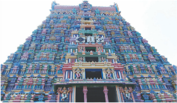
Medieval India saw an extraordinary production of devotional poetry, which were not restricted to one particular religion but inspired by different religious movements. The exponents of these movements held the view that total devotion Within Bracket bhakti to God could save man from the pitfalls of life and earn him salvation. It was also believed that one does not have to go to temples or perform rituals, for God is omnipresent and resides inside every human. The Bhagavad Gita proposed that the path of bhaktimarga Within Bracket the path of bhakti is superior to the two other religious approaches, namely, the path of knowledge Within Bracket jnana and the path of rituals and good works Within Bracket karma , providing inspiration to the exponents of Bhakti cult.
The Bhakti movement, or the resurgence of devotional practices, started in Tamil Nadu around seventh century ANNO DOMINI Within Bracket COMMON ERA. It included reciting the name of the God or Goddess, singing hymns in their praise, wearing religious marks or carrying identity emblems, and undertaking pilgrimages to sacred places associated with the deity. It emphasised the mutual emotional attachment and love of a devotee towards a personal God and of the God for the devotee
This view was also preached by Sufism, which appeared as a reaction against worldliness of the early Islam. Sufis believed that realisation of God can be achieved only through passionate devotion to God and intense meditation. Sufis were of the view that this type of meditation would enable the devotee to understand the true nature of God. They argued that doing so would liberate the devotee from all worldly bonds and help them become one with God. Several mystical religious movements, in both Hinduism and Islam, had no hesitation to freely include elements of different faiths in their teachings. ‘There is only one god, though Hindus and Muslims call him by different names’, stated Haridasa.
Within Bracket Azhwars and Nayanmars
The Azhwars, the Vaishnavite Bhakti sages and the originators of Bhakti cult, and the Nayanmars, the worshipers of Sivaor the Saivites, composed devotional hymns in Tamil language, dedicated to their respective gods. Siva-bhakti is associated with Siva’s manifestations on earth. Poems to Siva and Vishnu, particularly to Krishna, were composed in Tamil and other South Indian languages such as Kannada and Telugu. These poet-saints criticised caste-based
social status and advocated gender equality in order to make it good to stand the onslaught of Buddhism or Jainism.
Vishnu-bhakti or Vaishnavism is based on Vishnu’s avatars within Bracket incarnations, particularly Krishna and Rama. The 12 Tamil Azhwars are chiefly known for their immortal hymns. Two Azhwars stand out distinctly for their contribution to the promotion of the Bhakti movement. Nammazhwar’s fame lies in his 1,102-stanza Tiruvaimozhi. Nathamuni collected the 4,000 poems of Nammazhwar, in the form of Divya Prabandham. Andal, the only female Azhwar, is another. Periyazhwar, who was earlier known as Vishnu Chittar, made lots of songs on Krishna putting himself in the place of mother Yashoda. Periyazhvar is said to have found Andal as a baby in the tulsi garden at Srivilliputhur temple and adopted her. She grew up in the temple town of Srivilliputhur and became known as Andal-she who ruled. The Thiruppavai within Bracket The Path to Krishna and the Nachiyar Thirumozhi Within Bracket The Sacred Songs of the Lady are her celebrated works. Her poems expressing her love for Ranganatha, the incarnation of Vishnu worshiped at a temple at Srirangam, are used in Vaishnava wedding ceremonies in Tamil Nadu.
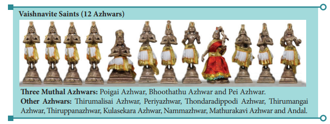
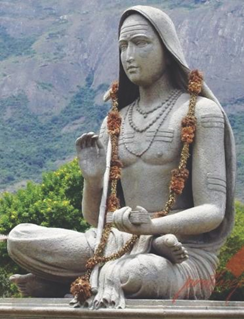
Adi Shankara
Adi Shankara or Shankarachariar
From 700 to 750 ANNO DOMINI with in Bracket COMMON ERA preached the Advaita philosophy. The essence of this philosophy is that the soul within Bracket atma unites with the universal soul within bracket brahma through the attainment of knowledge. He set up mathas within bracket mutts, centres of learning and worship, at Badrinath, Puri, Dwarka and Sringeri. These places have become prominent pilgrim centres today. Shankara enthusiastically endeavoured to restore the orthodox Vedic tradition without paying attention to the Bhakti movement of his time. His masterpiece is the commentary on the Brahma-sutra, which is a fundamental text of the Vedanta school. His commentaries on the principal Upanishads are also considered equally important.
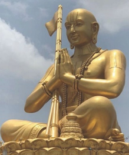
Ramanuja, a 11th century Vaishnava saint, was the most influential thinker of Vaishnavism. His philosophy, known as vishistadvaita, proclaims that the soul retains its identity
even after uniting with brahma. After a long pilgrimage, Ramanuja settled in Srirangam. Ramanuja articulated ideas of social equality and condemned caste-based restrictions on entering the temples. He established centres to spread his doctrine of devotion, Srivaishnavism, to God Vishnu and his consort Lakshmi.
In the Sixteenth and Seventeenth centuries, Vaishnavism spread across India. The Vadakalai Vaishnavism originally flourished around Kanchipuram, which was a popular centre for Sanskrit learning. Thenkalai Vaishnavism centred on Srirangam. Vadakalai sect focused on Vedic literature, which is written in Sanskrit. The Thenkalai sect stressed the importance of Divya Prabandhams, written by the 12 Azhwars in Tamil.
While dealing with the religious movements of the fourteenth and fifteenth centuries in northern India, one has to keep in mind the two very different attitudes which Hindu religious leaders had towards Islam. One group accepted what was best in Islam; the other adopted a few elements in order to prevent conversion to Islam. Both reacted to Islam, but one was sympathetic while the other was hostile. Kabir and Guru Nanak, and other founders of new sects are included in the first group, while the movement in Bengal, associated with Chaitanya deva, or Chaitanya Mahaprabu, belongs to the latter tendency.
It was Ramananda who spread the Bhakti ideology in northern India where it became a mass movement. Vallabhacharya, a Telugu philosopher, built a temple for Lord Krishna on the Govardhan Hills near Mathura. Surdas, a blind poet and musician, was associated with this temple as well as that of Agra. His famous collection of poetry is called Sursagar. Meera Bai, wife of the crown prince of Mewar, was an ardent devotee of Lord Krishna. She was a disciple of Ravidas. Meera Bai gained popularity through her bhajans. Chaitanyadeva popularised Krishna worship through ecstatic songs and dancing that had a profound effect on Vaishnavism in Bengal. In the Sixteenth century, in Tulsidas’s Hindi retelling of the story of Rama in the Ramcharitmanas, the sentiment of friendship and loyalty is stressed. Many of those poems continue to be recited and sung often at all-night celebrations.
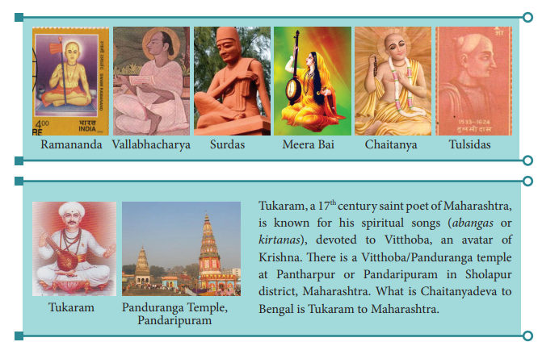
Tukaram Panduranga Temple Pandaripuram Pandaripuram Tukaram, a Seventeenth century saint poet of Maharashtra, is known for his spiritual songs With in Bracket abangas or kirtanas, devoted to Vitthoba, an avatar of Krishna. There is a Vitthoba / Panduranga temple at Pantharpur or Pandaripuram in Sholapur district, Maharashtra. What is Chaitanyadeva toBengal is Tukaram to Maharashtra.
The advent of Sufis to India dates back to the Arab conquest of Sind. It gained prominence in the Tenth and Eleventh centuries during the reign of the Delhi Sultans. Sufism adopted many native Indian concepts such as yogic postures, music and dance. Sufism found adherents among both Muslims and Hindus.
BOX ITEM:
Sufism: The word Sufi takes its origin from suf, meaning wool. The Sufis wore course garments made of wool and hence they were called Sufis. Sufism was basically Islamic but was influenced by Hindu and Buddhist Within Bracket Mahayana ideas. It rejected the stringent conduct code of the ulemas. Sufis lived in hermitages akin to monasteries and functioned outside society.
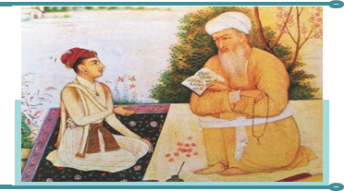
Sufis in medieval India were divided into three major orders. They were Chisti, Suhrawardi and Firdausi. Moinuddin Chishti made Chisti order popular in India. He died in Ajmer Within Bracket 1236 and his resting place is in the Ajmer Sharif Dargah in Ajmer, Rajasthan. The best known Sufi sage of the early medieval period was Nizamuddin Auliya of the Chishti order, who had a large number of followers among the ruling class in Delhi. Poet Amir Khusru was one of its distinguished followers. Suhrawardi order was founded by an Iranian Sufi Abdul-Wahid Abu Najib. The Firdausi order was a branch of Suhrawardi order and its activities were confined to Bihar.
As a Muslim, Kabir came under the influence of Varanasi-based Saint Ramananda. He accepted some Hindu ideas and tried to reconcile Hinduism and Islam. However,it was the Hindus, and particularly those of the lower classes, to whom his message appealed. Kabir believed that God is one and formless, even though different religious sects give him different names and forms. He opposed discrimination on the basis of religion, caste and wealth. He also condemned meaningless rituals. Kabir’s verses were composed in Bhojpuri language mixed with Urdu. The Kabir’s Granthavali and the Bijak contain collections of Kabir’s verses.
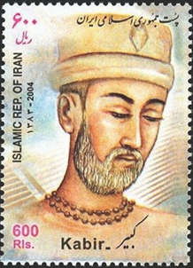
Early Life: Guru Nanak, born in a village near Lahore in 1469, showed interest in religious discussions with other saints right from his early childhood. His parents were keen to involve him in worldly life. But he was inclined towards spiritualism. He visited many holy places and finally settled in Kartarpur near Lahore. He died there in 1539. To mark the 550th birth anniversary of Guru Nanak, a corridor is constructed by the Indian government that will link the Nanak shrine in Gurdaspur with Gurudwara Darbar Sahib at Kartarpur in Pakistan.
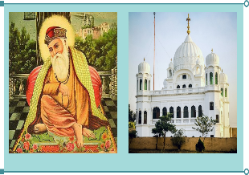
Guru Nanak preached that God is without form and wanted his followers to practice meditation upon the name of God for peace and ultimate salvation. He is considered the first guru by the Sikhs. Guru Nanak had great contempt for Vedic rituals and caste discriminations. The teachings of Guru Nanak formed the basis of Sikhism, a new religious order, founded in the late Fifteenth century. His and his successors’ teachings are collected in the Guru Granth Sahib, which is the holy book of the Sikhs. Guru Nanak’s teachings were spread through the group singing of hymns, called kirtan. The devotees gathered in dharmashala’s within bracket rest house, which became gurudwaras in course of time.
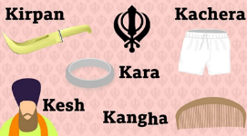
Guru Nanak nominated his disciple Lehna to succeed him as the guru. Following this precedent, the successors are named by the incumbent Sikh Guru. At the time of Guru Gobind Singh, the custom of pahul Within Bracket baptism by sweetened water stirred with a dagger was introduced. Those who got baptised became members of a disciplined brotherhood known as the Khalsa Within Bracket meaning the pure. The men were given the title Singh within bracket lion. Every member of the Khalsa had to have five distinctive things on his person. These were kesh within bracket uncut hair, kangha within bracket comb, kirpan within bracket dagger, kada steel bangle and kachera within bracket underpants. After Guru Gobind Singh, the holy book Guru Granth Sahib is considered the guru and its message is spread by the Khalsa.
• Vedic Hinduism was regenerated and thus saved from the onslaught of Islam.
• The Islamic tenets – unity of God and universal brotherhood – emphasised by the saints promoted harmony and peace.
• Bhakti was a movement of the common people; it used the language of the common people for its devotional literature.
• Bhakti movement opened up space for Indian languages to grow. It stimulated literary activity in regional languages.
• What sustained Sanskrit, despite its decline during this period, was the support extended by the rulers of Hindu kingdoms.
• Tamil was the only ancient Indian language remained vibrant during this period. But the ethos of Tamil literature in medieval time had changed. In the classical period, it had secular literature depicting the everyday life, its joys and sorrows, but under the influence of devotional cults, its emphasis shifted to religion and religious literature.
• Caste system and social disparities came to be criticised.
The Bhakti movement is explained.
Azhwars’initiatives followed by Nayanmars in Tamil country are described.
Adi Shankarar’s advaita philosophy and Ramanujar’s vishistadvaita philosophy are explained.
The devotional paths of saints, notably Tulsidas and Meera Bai, in northern India and Chaitanyadeva in Bengal are examined.
Mutual influence of Islam and Hinduism and birth of Sufism, Sikhism and mystical Hinduism are discussed in brief.
Radical versions of Bhakti Movement: Contribution of Kabir and Guru Nanak are detailed.
The essential features of Bhakti Movement are highlighted.
The impact of the Bhakti Movement on the medieval Indian society is analysed.
References
1. R. Champakalakshmi, Religion, Tradition and Ideology in Pre-Colonial South India, Oxford University Press, 2011.
2. Burton Stein, A History of India, Oxford
University Press, 2004.
3. Abraham Eraly, Emperors of the Peacock
Throne, Penguin, 1997.
4. https://www.britannica.com.
Glossary |
||||||
1. |
Salvation |
a way of being saved from danger, loss or harm |
நிவர்த்தி , விமோசனம் |
|||
2. |
Omnipresent |
present everywhere at the same time |
எங்கும் நிறைந்திருக்கின்ற |
|||
3. |
incarnation |
a living being embodying a deity or spirit |
அவதாரம் |
|||
4. |
Hostile |
showing enmity or dislike, unfriendly |
விரோதமாக, பகைமையுள்ள
பறகற�யுள்ள |
|||
5. |
prominence |
Importance |
முக்கியத்துவம் |
|||
6. |
adherent |
supporter With in Bracket of a person, cause or belief) |
ஆதரவாளர், பின்பற்றுபவர் |
|||
7. |
stringent |
severe, harsh |
கடுமையான, கெடுபிடியான
ககடுபிடியோன |
|||
8. |
Ulema |
Islamic scholar trained in Islamic law |
இஸ்லாமியப் பேரறிஞர் |
|||
9. |
hermitage |
the dwelling of persons living in seclusion |
ஆசிரமம், துறவிவாழிடம் |
|||
10. |
Akin |
Similar |
ஒத்த இயல்புடைய |
|||
11. |
Dagger |
short, pointed knife that is sharp on both sides |
குத்துவாள் குறுவாள் |
|||
12. |
depicting |
showing, portraying |
சித்தரிக்கும், விவரமாக விளக்கும் |
|||
13. |
disparity |
a great difference, the state of being unequal |
வேறுபாடு , சமமற் |
|||
1. Choose the correct answer:
1. Who of the following composed songs on Krishna putting himself in the place of mother Yashoda?
a) Poigaiazhwar
b) Periyazhwar
c) Nammazhwar
d) Andal
ANSWER: b) Periyazhwar
2. Who preached the Advaita philosophy?
a) Ramanujar
b) Ramananda
c) Nammazhwar
d) Adi Shankara
ANSWER: d) Adi Shankara
3. Who spread the Bhakthi ideology in northern India and made it a mass movement?
a) Vallabhacharya
b) Ramanujar
c) Ramananda
d) Surdas
ANSWER: c) Ramananda
4. Who made Chishti order popular in India?
a) Moinuddin Chishti
b) Suhrawardi
c) Amir Khusru
d) Nizamuddin Auliya
ANSWER: a) Moinuddin Chishti
5. Who is considered their first guru by the Sikhs?
a) Lehna
b) Guru Amir Singh
c) Guru Nanak
d) Guru Gobind Singh
ANSWER: c) Guru Nanak
2. Fill in the Blanks:
1. Periyaalwar was earlier known as dash
ANSWER: VISHNU CHITTER
2. dash is the holy book of the Sikhs.
ANSWER: GURU GRINDHA SAHIP
3. Meerabai was the disciple of dash
ANSWER: RAVIDAS
4. dash philosophy is known as vishistadvaita.
ANSWER: RAMANUJAR
5. Gurudwara Darbar Sahib is situated at dash in Pakistan.
ANSWER: KARTHARPUR
3. Match the following:
1. Pahul – Kabir
2. Ramcharitmanas – Sikhs
3. Srivaishnavism – Abdul-Wahid Abu Najib
4. Granthavali – Guru Gobind Singh
5. Suhrawardi – Tulsidas
ANSWER:
1. Pahul – Guru Gobind Singh
2. Ramcharitmanas – Tulsidas
3. Srivaishnavism – Sikhs
4. Granthavali – Kabir
5. Suhrawardi – Abdul-Wahid Abu Najib
4. Find out the right pair / pairs:
1. Andal - Srivilliputhur
2. Tukaram - Bengal
3. Chaitanyadeva - Maharashtra
4. Brahma-sutra - Vallabacharya
5. Gurudwaras - Sikhs
ANSWER: Andal - Srivilliputhur
2. Assertion (A): After Guru Gobind Singh, the holy book Guru Granth Sahib came to be considered the guru.
Reason (R): Guru Gobind Singh was the compiler of Guru Granth Sahib.
Option A) R is not the correct explanation of A
Option b) R is the correct explanation of A
Option c) A is correct but R is wrong
Option d) Both A and R are wrong
ANSWER: a) R is not the correct explanation of A
3. Find the odd person out
Poigai, Azhwar, Bhoothathu, Azhwar, Periazhwar, Andal, Nammazhwar.
ANSWER: Andal
5. State true or false:
1. Sufism was responsible for the spread of Islamic culture.
ANSWER: False
2. The best known Sufi sage of the early medieval period was Nizamuddin Auliya of the Chishti order.
ANSWER: True
3. Guru Nanak is considered the first guru of Sikhs.
ANSWER: True
4. Sufis believed that realization of God can be achieved only through passionate devotion to God and intense meditation.
ANSWER: True
5. The basic Tamil Saivite sacred canon consists of 12 books.
ANSWER: True
6. Give short answers:
1. What do you know about Tirumurai?
2. How many Nayanmars were there and who were prominent among them?
3. How did Gurunanak help to found Sikhism?
4. What had Tukkaram to do with the Vitthoba temple of Pantharpur?
5. Highlight the spiritual ideas of Kabir that appealed to lower classes.
7. Answer the following in detail:
1. Give an account of the contributions of exponents of Bhakti Movement in the southern as well as northern parts of India.
2. What is Sufism? How did it find its footing in India?
3. What impact did Bhakti movement make on Indian society?
8. Higher Oder Thinking s
1. Examine the statement that the Bhakti movement saved Vedic Hinduism from the onslaught of Islam.
9. Activity:
Visiting the living places as well as the places associated with the Bhakthi saints in Tamil Nadu.
UNIT 2 Art and Architecture of Tamil Nadu
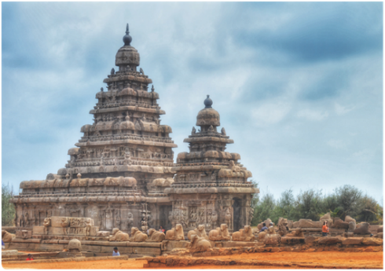
To understand the evolution of temple architecture in South India
To gain knowledge about the cultural heritage of Tamils
To know the contribution of Pallavas, Cholas, Vijayanagara and Nayak rulers to the development of temple art in Tamil Nadu
Dravidian architecture is of indigenous origin. It advanced over time by a process of evolution. The earliest examples of the Tamil Dravidian architectural tradition were the Seventh century rock-cut shrines at Mahabalipuram. The absence of monuments in South India prior to the Seventh century is attributed by scholars to temples ought to have been built in wood, which were eventually destroyed by forces of nature. In Tamil Nadu, the evolution of temple architecture took place in five stages: (1) The Pallava Epoch ANNO DOMINI within Bracket COMMON ERA. From 600 to 850); (2) Early Chola Epoch ANNO DOMINI within bracket COMMON ERA From 850 to 1100; (3) Later Chola Epoch ANNO DOMINI within bracket COMMON ERA From 1100 to 1350; (4) Vijayanagara / Nayak Epoch ANNO DOMINI within bracket COMMON ERA From 1350 to 1600; and (5) Modern Epoch within bracket After ANNO DOMINI within bracket COMMON ERA 1600.
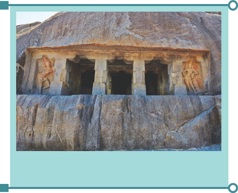
The Pallava epoch witnessed a transition from rock-cut to free-standing temples. Rock-cut temples were initially built by carving a rock to the required design and then rocks were cut to build temples. The Pallava king Mahendravarman was a pioneer in rock-cut architecture. Mandagapattu temple was the first rock-cut temple built by him. The rock-cut cave structure has two pillars in the
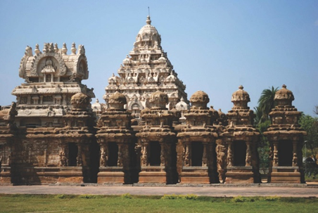
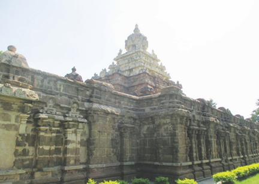
front that hold it. All the cave temples have simple sanctum cut on the rear side of the wall with a frontage-projecting mandapa with in bracket pavilion. On either side are two dwarapalas with in bracket gatekeepers. This cave architecture reached its decadent phase after ANNO DOMINI with in bracket COMMON ERA 700 and gave way to the large structural temples probably because the structural temples provided a wider scope to the sculptor to use his skill.
The Shore Temple at Mahabalipuram, also called the Seven Pagodas,was built by the Pallava king Narasimhavarman 2. It is the oldest structural temple in South India. The structural temples were built using blocks of rock instead of a whole block as earlier. Narasimhavarman 2, also known as, built the Kanchi Kailasanatha temple. The Vaikuntha Perumal temple at Kanchipuram was built by Nandivarman 2. Mahabalipuram with in bracket Mamallapuram is built of cut stones rather than carved out of caves. It has two shrines, one dedicated to Siva and the other to Vishnu.
The Tamil Dravida tradition is exemplified by rock-cutmonuments suchas Pancha Pandava Rathas, namely Draupadi ratha, Dharmaraja ratha, Bheema ratha, Arjuna ratha and Nagula- Sahadeva ratha. The outer walls of the rathas, especially of Arjuna, Bhima and Dharmaraja, are decorated with niches and motifs. The niches have the sculptures of gods, goddesses, monarchs and scenes from mythology. The Arjuna’s Penance, carved on the face of a granite boulder, is a magnificent relief, measuring approximately 100 feet long by 45 feet high.
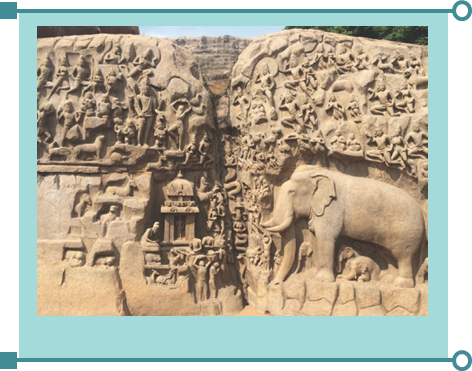
BOX ITEM:
The Mamallapuram monuments and temples, including the Shore Temple complex, were notified as a United Nations Scientific and Cultural Oranganization World Heritage Site in 1984.
Early Pandyas were the contemporaries of the Pallavas. Unlike the Pallavas, Pandyas installed deities in the sanctums in their cave temples. More than fifty cave temples have been found in different parts of the Pandyan Empire. The most important of them are found in Malaiyadikurichi, Anaimalai, Tiruparankundram and Trichirappali. These caves were dedicated to Siva, Vishnu and Brahma. In the Siva temple of Pandyas, the linga is carved out of the mother rock. The figure of Nandhi is also carved out of the rock. The Siva lingam in the sanctum is installed in the centre with enough space all around it. The sanctum also has a drainage canal. The pillars are divided into three parts and are of different sizes. The pillars have no uniform ornamentation. The back side walls are divided into four niches on which the bas- relief images of Siva, Vishnu, Durga, Ganapathy, Subramanya, Surya, Brahma and Saraswathi are carved out. The dwarapalas figure on either side of sanctum.
Rock-cut and structural temples are significant part of the Pandya architecture. The illustrious example for rock-cut style is unfinished Kazhugumalai Vettuvankoil temple. The Vettuvankoil, a monolithic temple at Kazhugumalai, is hewn out of a huge boulder on four sides. At the top of the temple, sculptures of Uma Maheswarar, Dakshinamoorthy, Vishnu and Brahma are found. Meenakshi Amman Temple in Madurai and Nellaiappar Temple in Tirunelveli represent examples of Pandyas’ architectural style.
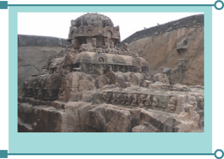
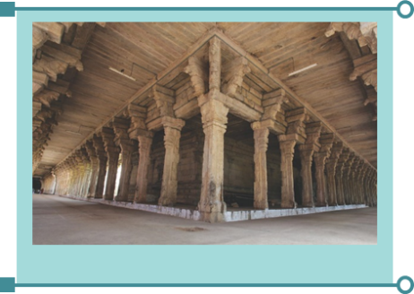
The walls of the caves are decorated with the bas relief of the gods and goddesses. In the case of structural temples, the walls of the sanctums are free from image decorations. Instead the superstructures and the pillars have the sculptures. The sculptures look majestic, having elaborate shoulders, slim bodies, beautiful ornaments and high crowns.
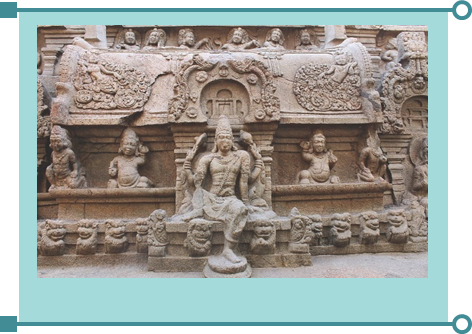
Tiruparankundram, Anaimalai and Kazhugumalai have the bas relief of many deities: Siva, Vishnu, Brahma, Parvathi, Subramanya, Ganapathi and Dakshinamoorthy. These are some remarkable images of the cave temples. Many early Pandya images unearthed from Madurai and its surrounding areas are now in Tirumalai Nayakkar museum at Madurai.
Caves at Sittanavasal,15 kilometres away from Pudukkottai, and at Tirumalapuram in Sankarankovil taluk,Tirunelveli district, have outstanding early Pandya paintings. Sittanavasal was a residential cave of the Jain monks. They painted the walls with fresco painting. Unfortunately, we have lost many of those paintings. Among the surviving ones, the lotus pond is notable for its excellent execution of colours and exposition of the scene. The image of lotus flowers, leaves spread all over the pond, animals, elephants, buffaloes, swans and a man who plucks the flowers look brilliant.
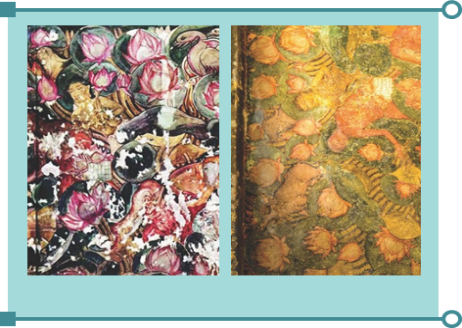
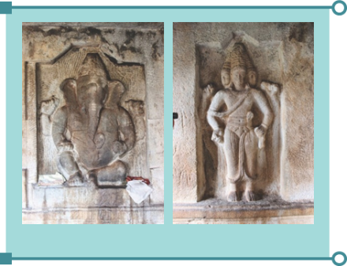
The Sittanavasal paintings have similarities with the Ajantha paintings. Tirumalaipuram, from where we get early Pandya paintings, are in a damaged condition.
The Cholas came to limelight in ANNO DOMINI with in bracket COMMON ERA 850 under Vijaylaya Chola and continued to govern the region for about four hundred years. For the Early Chola epoch, the temple at Dadapuram, near Tindivanam in TamilNadu, is worth mentioning.
The early Chola architecture followed the style of Sembian Mahadevi. Temples with the increased number of devakoshta with in bracket niche figures can be classified as belonging to the Sembiyan style. Tiruppurambiyam is an illustrious example of early temple that was re-fashioned in the days of Sembiyan Mahadevi.
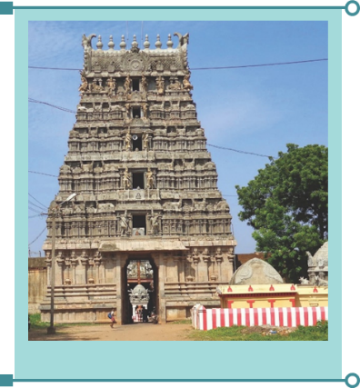
The maturity attained by Chola architecture is reflected in the two magnificent temples of Thanjavur and Gangaikonda cholapuram.
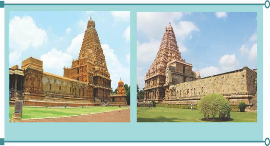
The magnificent Thanjavur Big Temple dedicated to Siva, completed around ANNO DOMINI with in bracket COMMON ERA 1009, is a fitting memorial to the material achievements of the time of Rajaraja.
At the time the Big Temple of Thanjavur was constructed, it was a huge temple complex. The 216 feet vimana with in bracket structure over the garbhagriha is notable as it is one among the tallest man-made shikaras of the world. Due to its massive height, the shikara is called the Dakshina Meru. The huge bull statue with in bracket Nandi measures about 16 feet long and 13 feet height and is carved out of a single rock Gangaikonda Cholapuram
Gangaikonda Cholapuram served as the Chola capital for about 250 years, until the decline of the Cholas and the rise of the Pandyas. The Brihadeeshwara temple of Gangaikonda Cholapuram, built by Rajendra Chola, is undoubtedly as worthy a successor to the Brihadeeshwara temple of Thanjavur. The height of the temple is 55meter. The sanctum has two storeys as in the big temple at Thanjavur. The outer wall has many projections with niches and recesses on three sides. In the niches there are the images of Siva, Vishnu and other gods. This temple complex has the shrines of Chandeeswarar, Ganesa and Mahishasura Mardhini.
Dharasuram, near Kumbakonam, is a Later Chola period temple, rich in architectural splendour, dedicated to Iravatheswara with in bracket Siva as god of lord Indira’s elephant. Rajaraja 2 constructed this temple. This temple is another landmark of the Chola architecture. The Mahamandapam is an elaborate structure. The entire structure looks like a ratha because it has four wheels at the Mahamandapam. The sanctum and pillars have many sculptures, which are miniatures of various mythological figures. A compound wall runs round the temple with a gopuram.
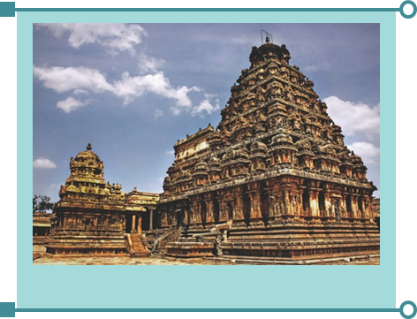
The contribution of Later Pandyas to South Indian art was significant. A case in point is the cave temple at Pillayarpatti with in bracket near Karaikudi, TamilNadu belonging to Thirteenth century. This temple is important both for its sculptures and for an inscription. A beautiful Ganesha is carved facing the entrance. The importance of the figure, referred to Desivinayaga in the cave inscription, is that there are two arms with the trunk turning to the right.
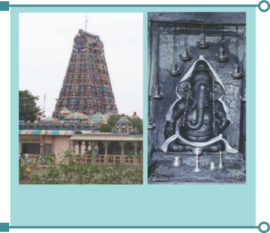
During the Vijayanagara epoch, a new form of construction emerged. It is the mandapam with in bracket pavilion to where the gods are carried every year. Pillared outdoor mandapams are meant for public rituals with the ones in the east serving as the waiting room for devotees, which adorn the large temples. These mandapams attract attention for its monolithic pillars. On these pillars are sculptured horses, lions and the gods. The kalyana mandapam at Kanchipuram within bracket Varadaraja Perumal temple and at Vellore within bracket Jalagandeshwartemple are notable examples. The most celebrated of these mandapams in temple of Madurai is the Pudumandapam.
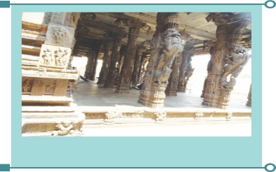
The main features of the Vijayanagar and Nayak architecture are decorated mandapas, ornamental pillars, life-size images, gopuras, prakaras, music pillars, floral works and stone windows during the 15th to 17th centuries. Tanks are attached to the temples. Gateways to temple are constructed from four directions with massive gopurams.
The practice of fitting the niches with sculptures continued during the Nayak period. There was an increased use of major sculptured figures within bracket relief sculpture as found at the Alakiya Nambi temple at Tirukkurungudi within bracket Tirunelveli district and the Gopalakrishna temple in the Ranganatha temple complex at Srirangam. The southern festival mandapam of Adinatha temple at Azhwar Tirunagari and the porch of the Nellaiyappar temple at Tirunelveli are other notable examples.
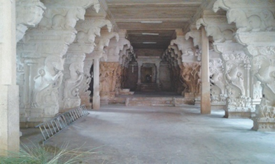
In TamilNadu, the image of deities attached to composite columns gradually freed themselves from the core column. The 1000-pillar mandapam of the Meenakshi- Sundareswarar temple, Pudumandapam at Madurai, Rathi Mandapam at Tirukkurungudi and Vanamamalai Temple at Nanguneri are illustrious examples for the mandapam architecture of this period
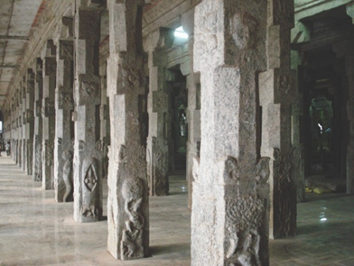
The pillars of this period are more decorative than the previous period.
Monolithic gigantic yazhi pillars, horse pillars with life-size portraits of mythological and royal family members, common folk, animals and floral works were made. Musical pillars were the peculiar feature of this time. A sitting lion at the top of the pillars is a common feature in the mandapams. The windows are carved out on the walls of the sanctum and mandapams.
The Jalagandeshwara temple at Vellore, the temples at Thadikompu near Dindugal
and Krishnapuram near Tirunelveli and the Subramanya shrine in the Big Temple
Thanjavur are most remarkable edifices of this time. Vijayanagar and Nayak paintings
are seen at Varadharaja Perumal temple at Kanchipuram, Kudalazhagar Temple at Madurai and the temples of Srivilliputhur, Tiruvellarai, Azhaharkoil, Tiruvannamalai and Srirangam. The paintings mostly have the stories from Ramayana, palace scenes and mythological stories.
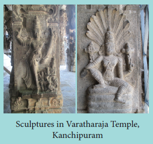
The Sethupathis, as the feudatories of Madurai Nayaks, ruled Ramanathapuram and contributed to the Ramanathaswamy temple architecture. In the temple of Rameswaram, the predominance of corridors is striking. It is claimed that this temple has the longest set of corridors in the world. The temple has three sets of corridors. The outer set of the temple’s corridors has a height of almost 7 metres and stretches for about 120 metres in both the eastern and western directions. The corridors to the north and to the south, on the other hand, are about 195 metres in length. The outer corridor
is also remarkable for the number of pillars that support it, which is over 1200 in number. Moreover, many of these pillars are decorated by ornate carvings. The innermost set of corridors
is the oldest of the three.
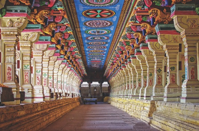
In sum, the Pallava period featured sculptural rocks. The early Chola period was marked by grand vimanas. The Later Chola period was known for beautiful gopurams. Vijayanagar period’s unique feature was the mandapam and the modern period was when corridors were given prominence.
References
1. K A Nilakanta Sastri, A History of South India: From Pre-Historic Times to the Fall of Vijayanagar Empire With in bracket Oxford University Press, 1997 - with an introduction by R. Champakalakshmi.
2. Burton Stein, A History of India, Oxford
University Press, 2004.
3. Crispin Branfoot, “The Architectural Sculpture of the South Indian Temples, From 1500 To 1700,” Artibus Asiae, volume. 62, No.2, 2002.
4. Crispin Branfoot, “The Tamil Gopura: From Temple Gateway to Global Icon,” ARS Orientalis volume 45, 2015.
5. https://www.britannica.com.
Glossary |
|||||
1. |
Indigenous |
native |
சுதேசம், உள் நாடு |
||
2. |
Epoch |
era, age |
சகாபேம், வரலாற்றின் ஒரு காலகட்டம் |
||
3. |
Sanctum |
a sacred place set apart in a temple |
கருவறை |
||
4. |
Decadent |
corrupt, a state of moral decline |
|
||
5. |
Exemplified |
illustrated, represented |
எடுத்துககாட்டாய் திகழ்கிறது |
||
6. |
Niche |
a cavity, especially in a wall to display a statue |
சிலை வைக்கப்படும் இ்டம் |
||
7. |
Motif |
a decorative design forming a pattern in an artistic work |
கலைப்பண்புக் கூறு |
||
8. |
Boulder |
a very large rock |
பெரிய கற்பாறை, பாறாங்கல் |
||
9. |
Contemporaries |
living or occurring at the same time |
சமகாலத்தை சேர்ந்தவர்கள் |
||
10. |
Hewn |
cut out and shaped |
செதுக்கப்பட்ட
|
||
11. |
bas-relief |
a sculpture carved into a wall |
சுவற்றில் செதுக்கப்படும் சிற்பம்
|
||
12. |
Execution |
carrying out |
செயல் திறன் ஒன்றை செய்து முடிதல் |
||
13. |
Recesses |
hollow spaces inside the wall or a structure |
உட்பகுதிகள், இடைவெளிகள் |
||
1. Which is the oldest structural temple in south India?
a) Shore Temple
b) Mandagapattu
c) Kailasanatha Temple
d) Vaikuntha Perumal Temple
ANSWER: a) Shore Temple
2. In which year were the Mamallapuram monuments and temples notified as a UNESCO world Heritage site?
a) 1964
b) 1994
c) 1974
d) 1984
ANSWER: 1984
3. What was the special feature of the architecture of early Chola period?
a) bas-reliefs
b) vimanas
c) corridors
d) gopurams
ANSWER: b) vimanas
4. Where is the Azhakiya Nambi Temple situated?
a) Tirukkurungudi
b) Madurai
c) Tirunelveli
d) Srivilliputhur
ANSWER: a) Tirukkurungudi
5. Who built the Vaikuntha Perumal Temple?
a) Mahendravarman
b) Narasimhavarman
c) Rajasimha
d) Rajaraja II
ANSWER: NANDHI VARMAN
2. Fill in the Blanks:
1. DASH was the first rock-cut cave temple built by the Pallava king Mahendravarman.
ANSWER: MANDAGAPATTU
2. The early Chola architecture followed the style of DASH.
ANSWER: SEMBIYAN MAHADEVI
3. The most celebrated mandapam in Madurai Meenakshiamman temple is the DASH
ANSWER: PUTHU MANDAPAM
4. Later Chola period was known for beautiful DASH
ANSWER: GOPURAMS
5. Vijayanagar period’s unique feature is the DASH
ANSWER: MANDAPAM
3. Match the following:
1. Seven Pagodas – Madurai
2. Rathi mandapam – Darasuram
3. Iravatheswara temple – Tirukkurungudi
4. Adinatha Temple – Shore temple
5. Pudumandapam – Azhwar Tirunagari
ANSWER :
1. Seven Pagodas – Shore temple
2. Rathi mandapam – TirukkurungudI
3. Iravatheswara temple – Darasuram
4. Adinatha Temple – Azhwar Tirunagari
5. Pudumandapam – Madurai
4. Find out the wrong pair / pairs:
1. Krishnapuram Temple – Tirunelveli
2. Kudalazhagar Temple – Azhwar Tirunagari
3. Sethupathis – Feudatories of Madurai Nayaks
4. Jalagandeshwara temple – Vellore
ANSWER:
Kudalazhagar Temple – Azhwar Tirunagari
2. Assertion (A): The predominance of corridors of Rameswaram Temple is striking.
Reason (R): The Temple has the largest set of corridors in the world.
Option a) R is not the correct explanation of A
Option b) R is the correct explanation of A
Option c) A is correct but R is wrong
Option d) Both A and R are wrong
ANSWER: R is the correct explanation of A
3. Find out the odd one out:
Srivilliputhur, Azhaharkoil, Srirangam, Kanchipuram, Tiruvannamalai.
ANSWER: Srirangam
4. Name the epoch of the following:
a) ANNO DOMINI From 600 to 850 b) ANNO DOMINI From 850 to 1100 c) ANNO DOMINI From 1100 to 1350 d) ANNO DOMINI From 1350 to 1600
ANSWER:
a) ANNO DOMINI 600 to 850 – PALLAVA’S PEROID b) ANNO DOMINI 850 to 1100 – ANCIENT CHOLA’S PAERIOD
c) ANNO DOMINI 1100 to 1350 – LATER CHOLA’S PERIOD d) ANNO DOMINI 1350 to 1600 – VIJAYA NAGARA NAYAKAR PERIOD
5. Find out the correct statement/s:
1) The Arjuna’s Penance is carved out of a granite boulder.
2) Meenakshi Amman temple in Madurai represents Pallava’s architectural style.
3) The cave temple at Pillayarpatti is a contribution of Later Pandyas.
4) The Sethupathis as feudatories of Madurai Nayaks contributed to Madurai Meenakshiamman Temple.
ANSWER:
The Arjuna’s Penance is carved out of a granite boulder.
The cave temple at Pillayarpatti is a contribution of Later Pandyas.
5. State true or false:
1. Rajasimha built the Kanchi Kailasanatha temple.
ANSWER: True
2. Early Pandyas were the contemporaries of Later Cholas.
ANSWER: False
3. Rock-cut and structural temples are significant parts of the Pandya architecture
ANSWER: True
4. Brihadeeshwara temple was built by Rajendra Chola.
ANSWER: True
5. Vijayanagar and Nayak paintings are seen at temple at Dadapuram.
ANSWER: False
6. Give short answers:
1. Write a note on Pancha Pandava Rathas.
2. Throw light on the paintings of Sittanavasal
3. Point out the special features of Thanjavur
Big temple.
4. Highlight the striking features of
Rameswaram Temple.
7. Answer the following in detail
1. The Pallava epoch witnessed a transition from rock-cut to free standing temples Explain.
2. Discuss how the architecture of Vijayanagara and Nayak period was different from the one of Pallavas and Later Cholas.
8. Higher Order Thinkings
1. Dravidian architecture is of indigenous origin - Explain.
2. Temple art was at its best during the Nayak
Period - Elucidate.
9. Activity:
Visiting temples built during the times of Pallavas, Cholas, Pandyas and Nayak rulers and see the differences in the structural and sculptural designs of each epoch.
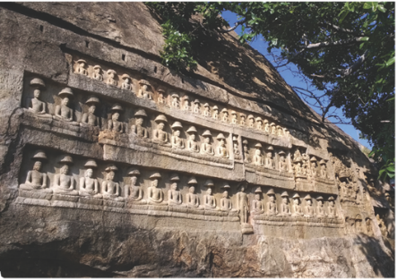
Ajivikam
During the Sixth century Before Christ within bracket Before the Common Era according to the Bigha Nitaya within bracket an ancient Buddhist tract, as many as 62 different philosophical and religious schools flourished in India. However, among these numerous sects, only the Ajivikas survived till the late medieval times. But Jainism and Buddhism continued to flourish until the modern times. Buddha and Mahavira, the founders of these two faiths, based their ethical teachings against the sacrificial cult of the Vedic religion. Their teachings were preserved and passed on through monks, who were drawn from various social groups.
Mahavira's preaching was orally transmitted by his disciples over the course of
about one thousand years. In the early period of Jainism, monks strictly followed the five great vows of Jainism. Even religious scriptures were considered possessions and therefore knowledge of the religion was never documented. Two hundred years after the attainment of nirvana with in Bracket death of Mahavira, Jain scholars attempted to codify the canon by convening an assembly at Pataliputra. It was the first Jain council to debate the issue, but it ended as a failure because the council could not arrive at a unanimous decision in defining the canon. A second council held at Vallabhi, in the Fifth century Anno Domini within bracket Common Era was, however, successful in resolving the differences. This enabled the scholars of the time to explain the principles of Jainism with certainty. Also, over time, many learned monks, older in age and rich in wisdom, had compiled commentaries on various topics pertaining to the Jain religion. Around 500 Anno Domini within bracket Common Era the Jain acharyas within bracket teachers realised that it was extremely difficult to keep memorising the entire Jain literature complied by the many scholars of the past and present. In fact, significant knowledge was already lost and the rest was tampered with modifications. Hence, they decided to document the Jain literature as known to them.
BOX ITEM
Five Great Vows of Jainism: 1. Non-violence Ahimsa; 2. Truth Satya; 3. Non-stealing –
Achaurya; 4. Celibacy / Chastity – Brahmacharya; 5. Non-possession – Aparigraha.
A major split occurred in Jainism within bracket Frist century Before Chirst within bracket Before the Common ERA, giving rise to two major sects, namely Digambaras and Swetambaras. Both the Digambaras and the Swetambaras generally acknowledge the Agama Sutras to be their early literature, while they do differ with regard to their content and interpretation.
Jain literature is generally classified into two major categories.
Agama Sutras consists of many sacred books of the Jain religion. They have been written in the Ardha-magadhi Prakrit language. Containing the direct preaching of Mahavira, consisting of 12 texts, they were originally compiled by immediate disciples of Mahavira. The Twelth Agama Sutra is said to have been lost.
Non - Agama literature includes commentary and explanation of Agama Sutras, and independent works, compiled by ascetics and scholars.They are written in many languages such as Prakrit, Sanskrit, old Marathi, Rajasthani, Gujarati, Hindi, Kannada, Tamil, German and English. Recognition was given to 84 books, and among them, there are 41 sutras, 12 commentaries and one Maha Bhasya or great commentary. The 41 sutras include 11 Angas within bracket scriptures followed by Swetambaras, 12 Upangas With in Bracket instructions manuals, five Chedas With in Bracket rules of conduct for the monks, five Mulas With in Bracket basic doctrine of Jainism and eight miscellaneous works, such as Kalpasutra of Bhadrabahu. It is believed that the Panchatantra has a great amount of Jain influence.
BOX ITEM
The Jainacharitha of Kalpa Sutra is a Jain text containing the biographies of the Jain Tirthankaras, notably Parshvanatha, founder of Jainism as well as the first Tirthankara, and Mahavira, the last and the 24th Tirthankara. This work is ascribed to Bhadrabahu, who along with Chandragupta Maurya migrated to Mysore within bracket about 296 Before Christ within bracket Before the Common Era and settled there.
BOX ITEM
Tirthankaras are those who have attained nirvana and made a passage from this world to the next.
In addition to these, we have some Jain texts composed in Indian vernacular languages such as Hindi, Tamil and Kannada. Jivaka Chintamani, a Tamil epic poem, is a good example, composed in the tradition of Sangam literature by a Jain saint named Tiruthakkathevar. It narrates the life of a pious king who rose to prominence by his own merit only to become an ascetic in the end. Another scholarly work in Tamil, Naladiyar, is also attributed to a Jain monk. Thirukkural was composed by Tiruvalluvar, believed to be a Jain scholar.
There is a clear evidence of the movements of the Jains from Karnataka to the Kongu region within bracket Salem, Erode and Coimbatore areas, to the Kaveri Delta within bracket Tiruchirapalli southwards into Pudukkottai region With in Bracket Sittannavasal and finally into the Pandya kingdom within bracket Madurai, Ramanathapuram and Tirunelveli districts. Tamils broadly come under Digambara sect. It is believed that the Kalabhras were the patrons of Jainism.
Sittanavasal cave in Pudukkottai district is located on a prominent rock that stands 70 meter above the ground. It has a natural cavern, known as Eladipattam, at one end, and a rock-cut cave temple at the other. Behind the fenced cavern, there are 17 rock beds marked on the floor. The stone berths aligned in rows are believed to have served as a Jain shelter. The largest of these ascetic beds contains a Tamil-Brahmi inscription that dates to the 2nd century Before Christ within bracket Before the Common Era There are more inscriptions in Tamil from the 8th century Anno Domini within bracket Common Era bearing the names of monks. It is believed that they should have spent their lives in isolation here.
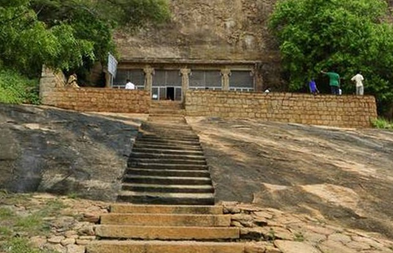
The Sittanavasal cave temple, named Arivar Koil, lies on the west off the hillock. The facade of the temple is simple, with four rock- cut columns. Constructed in the early Pandya period, in the Seventh century Anno Domini within bracket Common Era it has a hall in the front called the Ardha-mandapam and a smaller cell at the rear, which is the garbha graha With in Bracket sanctum sanctorum.
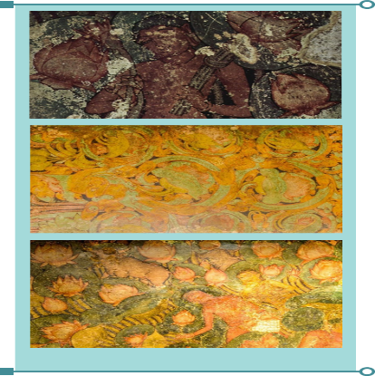
The murals in the temple resemble the frescoes of the famous Ajanta caves. The Archaeological Survey of India within bracket ASI took over the caves only in 1958. Thereafter it took two decades to cover the cave and regulate the entry of visitors. There are the bas- relief figures of Tirthankaras on the left wall of the hall and acharyas on the right before one enters the inner chamber, the sanctum sanctorum.
Jainism flourished during the Pallava reign. In his writings, Chinese traveller Hiuen Tsang has
mentioned aboutthe presence of a large number of Buddhists and Jains during his visit to the Pallava country in Seventh century Anno Domini within bracket Common Era. Most of the Pallava rulers were Jains. Mahendravarman was a Jain initially. The two Jain temples in Kanchipuram are Trilokyanatha Jinaswamy Temple at Tiruparuttikunram, on the banks of the river Palar, and the Chandra Prabha temple dedicated to the Tirtankara named Chandraprabha. The architecture of these temples is in Pallava style, but it has deteriorated in due course of time. During the Vijayanagar rule Within Bracket 1387, Irugappa, a disciple of Jaina-muni Pushpasena; and a minister of Vijayanagar King Harihara 2 Within Bracket From 1377 To 1404, expanded the Trilokyanatha Temple by adding the Sangeetha mandapa. The grand murals were added only at this time.
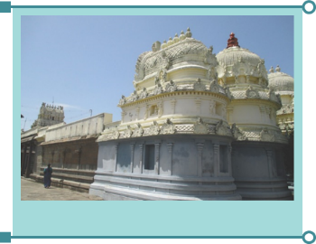
Mural paintings in the temples show scenes from the lives of Tirtankaras. Unfortunately the paintings of the Trilokyanatha temple at Tiruparuttikunram have been ruined by over- painting done during renovation. There is rich inscriptional evidence inside the second shrine,
the Trikuda Basti, containing information on the development of the temple, and the contributions of various donors over the centuries.
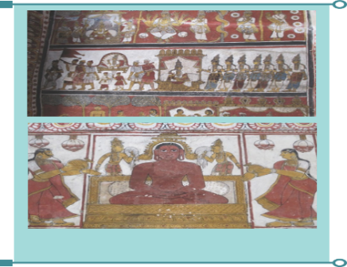
In the Kanchipuram district, apart from Tiruparuttikunram, Jain vestiges have been found over the years in many villages across the state.
BOX ITEM:
The total population of Jains in Tamil Nadu is 83,359 or 0.12 per cent of the population as
per the 2011 census.
The 8th century Kazhugumalai temple in Kovilpatti taluk in Thoothukudi district marks the revival of Jainism in Tamil Nadu. This cave temple was built by King Parantaka Nedunjadaiyan of the Pandyan kingdom. Polished rock-cut cave beds, popularly known as Panchavar Padukkai at Kazhugumalai cavern host the figures of not only the Tirtankaras but also the figures of yakshas and yakshis within bracket Male and Female attendants respectively.
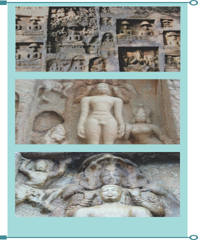
Fourteen Jain monk beds, dating back to the 5th century Anno Domini within bracket Common Era have been excavated inside three caverns on top of a hill in Vellore district. The beds are found at the Bhairavamalai in Latheri, Katpadi taluk, Vellore district. Of the three caverns, two of them house beds. One houses four rock beds while the other houses one bed. Unlike many rock beds found elsewhere, these ones have no head-rests.
Tirumalai is a Jain temple in a cave complex located near Arni town in Tiruvannamalai district in Tamil Nadu. The complex, dated to the Twelevth century Anno Domini within bracket Common Era includes three Jain caves, two Jain temples and a 16-meter -high sculpture of Neminatha, the Twenty second Tirthankara. This image of Neminatha is considered to be the tallest Jain image in Tamil Nadu.
There are 26 caves, 200 stone beds, 60 inscriptions and over 100 sculptures in and around Madurai. The Kizha Kuyil Kudi is a striking example. This hillock is 12 kilometres west of Madurai, on the Madurai–Theni Highway. The sculptures are assigned to the period of Parantaka Veera Narayana Pandyan who ruled from Anno Domini within bracket Common Era. From 860 to 900. There are eight sculptures. The images of Rishab Nath or Adinath, Mahavira, Parshvanath and Bahubali are found here.
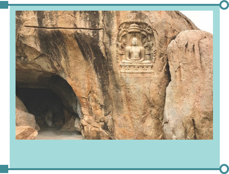
Jaina monasteries and temples also served as seats of learning. Education was imparted in these institutions to the people irrespective of caste and creed. The Jainas propagated their doctrines and proved to be a potential media of mass education. The Bhairavamalai we have mentioned earlier is situated near a small village called Kukkara Palli. ‘Palli’ is an educational centre of Jains and villages bearing the suffix of Palli are common in many places in Tamil Nadu.
The educational institutions had libraries attached to them. Several books were written by the preachers of Jainism, highlighting the important aspects of Jainism. The permission for women to enter into the order provided an impetus to the spread of education among women.
Buddha’s original name, Siddhartha Sakya- muni Gautama, if translated into English, would mean Gautama who belongs to the Sakya tribe and who has reached the goal of perfection. Gautama Buddha was a contemporary of Mahavira. His father ruled the tribe of Sakya in a region near the present-day Nepal. Gautama found that he had nothing to learn from the teachers of the old religions. The religions proclaimed that the only way to salvation was through living the life of an ascetic. But despite practicing asceticism, Gautama could not arrive anywhere near the truth. And one night, as he sat under a bodhi-tree struggling with his doubt and his loneliness, a great peace descended on him. He was no longer Gautama, the sceptic, but became Buddha, the Enlightened. At last, he had succeeded in understanding the great mystery of human suffering, its causes and its cure. Asserting that both the king within bracket passion for pleasures and the hermit within bracket self-mortification were wrong, he discovered the middle path. The middle path is based on ‘an eight-fold path’ of Right understanding, Right thought, Right speech, Right action, Right livelihood, Right effort, Right mindfulness, Right concentration.
Buddha taught not the glory of God but the power of love. He held the view that all men are born to an ‘equality of rights’. He undertook long journeys and carried his message far and wide. Buddha preached his teachings in Prakrit. His four noble truths are as follows:
1. Life includes pain, getting old, disease, and ultimately death.
2. Suffering is caused by craving and aversion.
3. Suffering can be overcome and happiness attained.
4. True happiness and contentment are possible, if one pursues the eight-fold path.
Buddha’s teachings for a long time were transmitted through the memory of teachers and disciples. They were reduced to writing by 80 Before Christ within bracket Before the Common Era. and were written in the Pali language. The Pali canon Tripitaka has three divisions, also known as the Threefold Basket. They include Vinaya Pitaka, Sutta Pitaka and Abhidhamma Pitaka.
Vinaya Pitaka contains the rules of the order of Buddhist monks, which must be observed for achieving purity of conduct.
Sutta Pitaka lays down the principles of religion by citing discourses as evidence.
Abhidhamma Pitaka is the latest of the Tripitaka. It deals with ethics, philosophy and meta-physics. Other prominent canonical literary works in Buddhism include:
Jatakas – various stories of the lives of the
Buddha found in Buddhist literature.
uddhavamsa – A legend in verse, containing a narration of the life and activities of the 24
Buddhas who are believed to have preceded Gautama. Apart from the above canonical literature, there is a long series of non- canonical literature in Pali. They include:
• Milindapanha – which means ‘questions of Milinda’. It contains a dialogue between Milinda, the Graeco-Bactrian king, and the monk Nagasena over some problems that faced Buddhism. It was originally written in Sanskrit.
• The two famous Ceylonese chronicles are Mahavamsa and Dipavamsa. The former deals with the royal dynasties of the Indian subcontinent including Sri Lanka, while the latter deals with the arrival of the Buddha’s teachings and preachers in Sri Lanka.
• Buddhagosha’s Visuddhimagga is a later work. He is the first Buddhist commentator.
• Sanskrit literature became prominent in Buddhism with the rise of Mahayana Buddhism. However, some of the Sanskritic works were produced by the Hinayana school as well. Buddhacharita, written by Asvaghosa, is an epic style Sanskrit work. It tells the life history of Gautama Buddha.
Buddhism is believed to have spread to the Tamil country by the Ceylonese missionaries. The evidence in support of this is some monuments of the Pandya country, which are assigned to the Third century Before Christ within bracket before the Common Era. The monuments are in caverns known as Pancha Pandava Malai. Buddhism seems.
to have flourished and co-existed peacefully with Jainism, Ajivikam and also with various sects of Hinduism. Since the time of Bhakti Movement, Buddhism came to be challenged by its exponents and began to lose royal patronage. The Thevaram hymns of Saiva saints and the Nalayira Divyaprabandam of Vaishnava Azhwars provided evidence to the challenges Buddhism faced in Tamil country. When Hieun Tsang, the Chinese traveller, visited south India in the Seventh century, Buddhism was almost on the decline.
But contrary to popular perception, the Buddhism did not disappear completely. The presence of Virasozhiyam within bracket a Eleventh century Later Chola period grammar text, composed by a Buddhist and the discovery of Thirteenth century Buddhist bronzes in Nagapattinam testify to the presence of Buddhism in later periods. The sculptures of Buddha in Thiyaganur village in Salem district strengthen this conclusion.
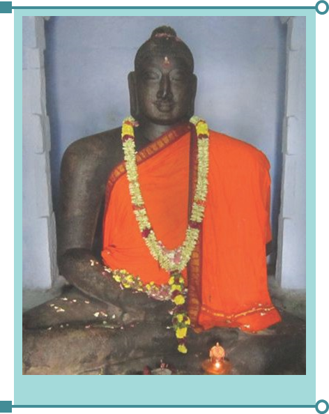
Though Buddhism faced challenges from Saiva and Vaishnava sects from the Pallava period onwards. One of the exceptions was Nagapattinam, which was supported by Chola kings, not for religious but for political reasons. Chudamani Vihara of Nagapattinam was constructed by the Srivijaya king with the patronageof RajarajaChola.This viharahas been since destroyed. The Tamil epic, Manimekalai, written by Kulavanigan Sithalai Sattanar, is considered a typical representation of Tamil Buddhism. Sattanar indigenised Buddhism into Tamil Buddhism by communicating a large set of Buddhist terms in Tamil, as translations from Sanskrit and Pali.
There is a record about a Buddhist monk named Vajrabodhi, who was skilled in tantric rituals, but this monk left the Pallava court for China. Mahendravarman’s Mattavilāsa Prahasana describes Buddhism as a religion in decay.
In the field of education, Buddhist Sanghas and Viharas served as centres of education. Students from various parts of the world came here to receive education. Nalanda, Taxila and Vikramshila gained reputation as great educational centres. They were originally Buddhist Viharas. Students from Tibet and China were influenced by Buddhism and they took effective steps to spread Buddhism.
BOX ITEM:
A Vihara in Sanskrit means ‘dwelling’ or ‘house’. Originally, viharas were dwelling places used by wandering monks during the rainy season. Later they transformed into centres of learning through the donations of wealthy lay Buddhists. Royal patronage allowed pre-Muslim India to become a land of many viharas that imparted university education and were treasure troves of sacred texts. Many viharas, such as Nalanda were world famous.
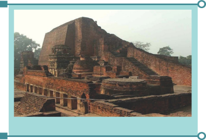
Excavations of Buddhist Vihara and a temple at Kaveripoompattinam and hundreds of stone and bronze sculptures by Archaeoiogical Survey of India from over 125 sites have proved the spread of the religion in the state. A 1.03 metre Buddha statue in 'padmasana' pose in remote Tirunattiyattankudi village in Tiruvarur district was unearthed when digging a tank in a field.
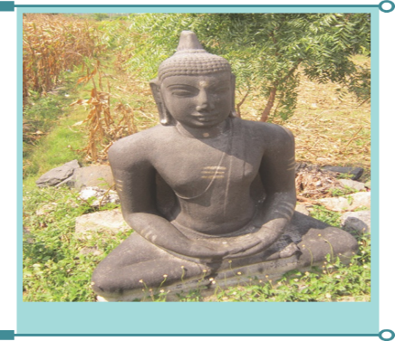
The Ajivikas believed in the doctrine of karma, transmigration of the soul and determinism. The head of Ajivika sect was Gosala Mankhaliputta. The Ajivikas practiced asceticism of a severe type. The Ajivika religious order and school of philosophy is known from the Vedic hymns, the Brahmanas, the Aryankas and other ancient Sanskrit compilations and treatises of the pre-Jaina and pre-Buddhist age. Gosala’s ideas live on in other religions, though no Ajivika literature has survived.
Gosala was closely associated with Mahavira for six years and then they parted company. The Mauryan emperor Asoka and his grandson Dasaratha patronised the Ajivikas. After the collapse of the Mauryan Empire, the sect declined in northern India, but had by then spread into southern India where it continued to exist for many centuries.
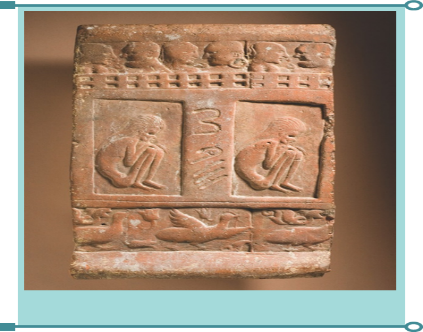
Throughout history, Ajivikas had to face persecution everywhere. Village communities under Pallavas, Cholas and Hoysalas imposed special taxes on them. Despite such obstacles, Ajivikas continued to have influence along the Palar river in the modern states of Karnataka and Tamil Nadu within bracket Vellore, Kanchipuram and Tiruvallur districts till about the 14th century. In the end, they seemed to have been absorbed into Vaishnavism.
References
1. Glimpses of World Religions: Buddhism, Jaico,
2004.
2. Henry Thomas, Dana Lee Thomas, Living Biographies of Great Religious Leaders, Bharatiya Vidya Bhavan, 1996.
3. Abraham Early, Gem in the Lotus, Penguin,
2002.
4. P.C. Alexander, Buddhism in Kerala,
Annamalai University, 1949.
5. Times of India, 21 July 2014.
6. The Hindu, 7 September 2014.
Glossary |
|||
1. |
Heterodox |
not conforming to orthodox beliefs, especially religious ones, unorthodox |
பழமை சாராத வழக்கத்திலுள்ள மதக்கொள்கைக்கு மாறான |
2. |
Canon |
a rule, an accepted principle |
ஒரு வீதி , பொது ஒழுங்கு |
3. |
Unanimous |
all sharing the same view |
ஒருமனதாக |
4. |
Ascetic |
monk, hermit |
துறவி, சந்நியாசி |
5. |
Deteriorate |
to grow worse |
சீர்கேடு , மோசமடை |
6. |
Vestiges |
things left behind, remains, traces |
தடங்கள்,சுவடுகள்,அடையாளங்கள்
ள் ள் ள் ள் , அடையாளங்கள் சுவடுகள் , சுவடுகள் |
7. |
Cavern |
a large deep underground cave |
அடி நில குகை |
8. |
Hillock |
small hill, mound |
சிறு குன்று |
9. |
Façade |
the front of a building |
கட்டடத்தின் முகப்பு |
10. |
Frescoes |
paintings done in water colour on a wall or ceiling |
சுவரில் அல்லது மேற்கூரையில் வரையப்படும் ஓவியங்கள் |
11. |
Mural |
a large picture painted on a wall |
சுவரோவியம் |
12. |
Impetus |
motivation, stimulus |
உத்வேகம் , உந்துசக்தி |
13. |
Salvation |
saving from harm, ruin or loss |
இரட்சிப்பு ,முக்தி, விமோசனம் |
14. |
sceptic Withskeptic) |
someone who habitually doubts accepted beliefs |
ஐயுறவுவாத , சமய
ஐயுறவாளர் |
15. |
Craving |
a strong desire |
அடக்க முடியாத ஆசை , மிகு விருப்பம் |
16. |
Persecution |
unfair treatment of a person or a group, especially because of their religious or political beliefs |
துன்புறுத்துதல் ,அடக்குமுறை |
1. Choose the correct answer:
1. Where was the first Jain Council held to codify the Jaina canon?
a) Pataliputra
b) Vallabhi
c) Mathura
d) Kanchipuram
ANSWER: a) Pataliputra
2) In which language was
Agama sutras written?
a) Ardha-Magadhi Prakrit
b) Hindi
c) Sanskrit d) Pali
ANSWER: a) Ardha-Magadhi Prakrit
3) Which of the following was patronised by the Kalabhras?
a) Buddhism
b) Jainism
c) Ajivikas
d) Hinduism
ANSWER: b) Jainism
4) Where are the Rock beds found with no head-rests?
a) Vellore
b) Kanchipuram
c) Sittanavasal
d) Madurai
ANSWER: a) Vellore
5) Who is believed to have built the Kalugumalai Rock-Cut Temple?
a) Mahendra Varman
b) Parantaka Nedunchadayan
c) Parantaka Veera Narayana Pandyan
d) Harihara
ANSWER: b) Parantaka Nedunchadayan
2. Fill in the blanks:
1) The image of DASH is considered to be the tallest Jain image in Tamil Nadu.
ANSWER: Tirthankara Neminatha
2) Buddhacharita was written by DASH
ANSWER: Asvagosa
3) Chinese traveller Huein Tsang visited Pallava country in DASH century.
ANSWER: Anno Domini Seventh
4) DASH describes Buddhism as a religion in decay.
ANSWER: Mattavilasaprahasana
5) The Mauryan emperor Asoka and his grandson Dasarata patronised DASH.
ANSWER: Ajivikas
3. Match the following:
1. Kalpa sutra – Tiruthakkathevar
2. Jivaka Chintamani – Madurai
3. Neminatha – Nagasena
4. Milinda Panha – Bhadrabahu
5. Kizha Kuyil Kudi – Twenty Second Tirthankara
ANSWER:
1. Kalpa sutra – Bhadrabahu
2. Jivaka Chintamani – Tiruthakkathevar
3. Neminatha – Twenty Second Tirthankara
4. Milinda Panha – Nagasena
5. Kizha Kuyil Kudi – Madurai
4.. Answer the following:
1) Find out the odd one
Tiruparuttikunram, Kizha Kuyil Kudi, Kazhugumalai, Nagapattinam, Sittanavasal.
2) Assertion (A): Gautama found that he had nothing to learn from the teachers of the old religions.
Reason (R): The religions proclaimed that the only way to salvation was through living the life of an ascetic.
Option A) A is correct. R is the correct explanation of A.
Option b) A is correct. R is not the correct explanation of A.
Option c) Both A and R are wrong.
Option d) A is wrong. But R is correct.
ANSWER: a) A is correct. R is the correct explanation of A.
3) Find out the correct statement/s
1) During the Sixth century Before Christ. as many as 62 religious schools flourished in India.
2) ‘Palli’ is an educational centre of Buddhists.
3) Royal patronage allowed pre-Muslim India to become a land of vihars.
4) The Ajivikas continued to exist till Fifteenth century.
a) 1) and 3) are correct.
b) 1), 2) and 4) are correct.
c) 1) and 2) are correct.
d) 2), 3) and 4) are correct.
ANSWER: a) 1) and 3) are correct.
4) Find out the wrong pair/s
1. Parshvanatha – Twenty Second Tirthankara
2. Mahabashya – the Ceylonese Chroniclei
3. Visuddhimagga – Buddhagosha
4. Buddha – Eight-fold Path
ANSWER: 1. Parshvanatha – Twenty Second Tirthankara
5. True or False:
1. The Twelevth Agama Sutra is said to have been lost.
ANSWER: True
2. Throughout history, Ajivikas had to face persecution everywhere.
ANSWER: True
3. Education was imparted in institutions of Jains irrespective of caste and creed.
ANSWER: True
4. Nalanda, Taxila and Vikramashila gained reputation as pilgrim centres.
ANSWER: False
5. Buddhism faced challenges from Saiva and Vaishnava sects from the Chola period onwards.
ANSWER: False
6.. Answer the following:
1. Make a list of the Five Great Vows of Jainism.
2. What are the four noble truths of Buddha?
3. Explain the three divisions of Tripitaka.
4. Highlight the importance of Sittanavasal.
7.. Answer in detail:
1. Enumerate the sources of study for Jainism and Buddhism.
2. Give an account of relics of Jainism and Buddhism that have come to light in Tamil Nadu.
3. Discuss the essence of Ajivika philosophy and its presence in Tamil Nadu.
8.. Higher Order Thinkings
1. Analyse the commonalities and differences between heterodox religions and Vedic religion.
2. Why did these heterodox religions fail to become mainstream religion in India?
9. Activity:
Students to visit district museums and places, where excavated Buddhists and Jain relics are on display.
ICT CORNER
BUDDHISM
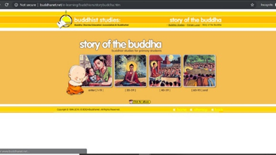
To know and learn about the Buddhism through this act
PROCEDURE:
Step 1: Open the Browser and type the Uniform Resource Locator within bracket Or Scan the Quick Response Code.
Step 2: Story of Buddha page will appear on the screen.
Step 3: Click on the Image to know about the story of Buddha.
Step 4: Click on the ebook below the image to download the Portable Document Formate.
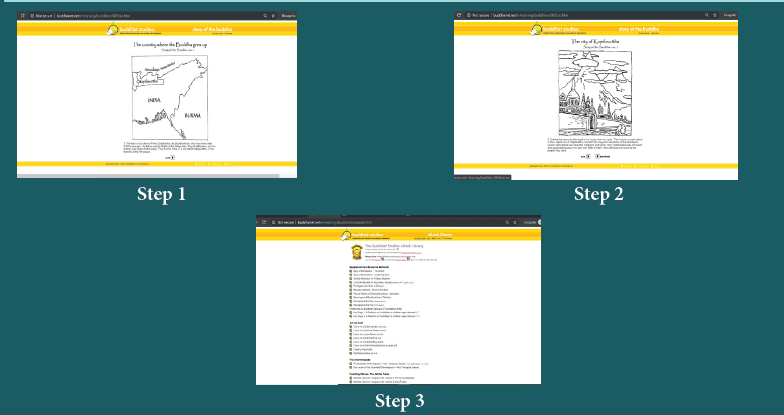
Web URL: BUDDHISM
http://www.buddhanet.net/e-learning/buddhism/storybuddha.htm
GEOGRAPHY
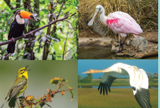
America and South America.
Students: Good morning madam
Teacher: Good morning students. Did you all enjoy your half yearly exam holidays.
Students: Yes madam
Teacher: Fine. How many continents are there in the world? Can anyone of you name them?
Students: Madam there are seven continents.
They are North America, South America, Europe, Asia, Antarctica, Australia and Africa.
Teacher: Last year, how many continents you did study?
Students: Madam, we studied about two continents. They are Europe and Asia.
Teacher: Ok, this year we will be learning about North America and South America.
North and South America are often referred to as the new world because they were discovered in the late fifteenth century. In 1492 North America was discovered by Christopher Columbus while he was trying to find a new sea route to India. The landmass was named America in 1507 after the Italian
explorer Amerigo Vespucci who landed on this continent. In this lesson we can learn location, boundaries, relief features, rivers, climate, natural vegetation, minerals and transportation.
The continent of North America lies between 7degree North and 84degree North latitude which lie entirely in the Northern Hemisphere. The Tropic of Cancer within bracket 23 Half degree North passes through the Mexico and Arctic Circle within bracket 66 Half degree North runs through northern part of Canada. Longitudinally it extends between 53degree West and 180degree West and lies entirely in the western hemisphere. This continent has a great longitudinal extent which results in Seven
Time Zones. North America covers an area of about 24,709,000 Square kilometers . Which occupies 16.50 percent of the entire land area.
North America is surrounded by the Pacific Ocean in the West, the Atlantic Ocean in the east, Arctic Ocean in the north and South America in the south. The Isthmus of Panama joined with the North America and South America. The Bering Strait separates North America from Asia.
North America is the third largest continent next to Asia and Africa. North America has three large countries and several smaller ones. Canada is the largest country of North America followed by the United States of America and Mexico. The seven small countries which lies to the south of Mexico are referred to as central America. These include Nicaragua, Honduras, Guatemala, Panama, Costa Rica, El Salvador and Belize.
DO YOU KNOW?
Isthmus: A narrow stretch of land joining two large land masses.
Strait: A narrow stretch of water joining two large water bodies.
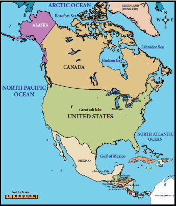
North America is a continent of great physical diversity. Mount McKinley is about 6194 meter above the sea level and is the highest peak. In North America death valley is about 86meter below the sea level and is the lowest part of the continent of North America. It has some of the oldest and the youngest rocks in the world. On the basis of physiography North America can be classified into four major physical divisions:
1. The Rocky Mountains,
2. The Great Plains,
3. The Appalachian Highlands and
4. The Coastal Plain.
The western part of the continent is occupied by long ranges of young folded mountains interspersed with high plateaus, narrow valleys and broad interior basins. This mountain range extends for about
4800 km from Alaska in the North to the Panama Strait in the South. The width varies from 110 to 480 Kms. They are consists of parallel ranges and are known as the Rockies in the east and the Coast Range Mountains in the west. The Sierra Nevada is a mountain range in the Western United States lies. between the Central Valley of California and the Great Basin. In Mexico, they are called Sierra Madre. The Rockies and the Coast Range are together is known as “Western Cordilleras”. There are high intermontane plateaus lies between these ranges. Such as the Mexican plateau, the Colorado Plateau and the Columbian plateau.
DO YOU KNOW?
The Cordilleras are also part of the Fire Ring of the Pacific because there are a number of active volcanoes and this area is also subject to earthquakes.
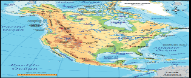
DO YOU KNOW?
Highest peaks in different continents:
Asia: Mount Everest within bracket 8848 meter
South America: Mount Aconcagua within bracket 6961 meter
North America: Mount McKinley within bracket 6194 meter
Africa: Mount Kilimanjaro within bracket 5895 meter
Europe: Mount Elbrus within bracket 5642 meter
Antarctica: Mount Vinson Massif within bracket 4,892meter
Australia: Mount Kosciuszko within bracket 2,228 meter
To the east of the Rockies and the west of the Appalachian Mountains lies the great plains of North America. It covers about three - fifth of the continent. This plain stretches from the Arctic Ocean in North to the Gulf of Mexico in the South and from the Appalachian Highlands in the east to the Rockies in the west. The western part of the plains is called the High Plains spreading roughly over the foothills of the Rockies. Most of the rivers of this region have their source in the Western Highlands and the plains generally slope eastwards and southwards. They are drained by rivers like the Mississippi and the Missouri.
The Appalachian Highlands do not form a continuous chain like the Western Highlands within bracket The Rockies. These Highlands are low and wide. They have a very few peaks more than 1800meters. They include the High Plateaus of
Greenland, Labrador or Laurentian Plateau in Canada and the Appalachian Mountains in the United States. These old fold mountains are worn down by weathering and are much lower than the Western highlands. This region is rich in mineral reserves like coal, iron ore, copper Etcetera, which play a vital role in the North American economy.
The coastal plains of North America are the youngest in age. Most of the Atlantic Plain has been drowned within bracket lies underwater. This is low and relatively plain area with sandy soil which is infertile in nature. Here swamps and marshes are abundant and the coast is indented by river mouths and bays on which many important seaports are located.
Many rivers flow across this land and some of them following the valleys are formed by the glaciers. The Mississippi and Missouri rivers are the longest rivers in North America and together they form the fourth longest river system in the world and stretching more than 6114 kilometer from Montana to Gulf of Mexico. After 3700 kilometer running the Missouri river joins the Mississippi river. The Mackenzie River is the second largest drainage basin of North America. It has it source from Great Slave Lake and drains into Arctic Ocean.
St. Lawrence has its origin in Lake Ontario which flows north east and drains into the Atlantic Ocean. The plateau of the west has been cut deeply by the River Columbia and its tributary which forms many Gorges called Canyons. The most famous is the Grand Canyon cut by the river
Colorado which all flows over the plateau of Columbia. These rivers form a barrier to communication but whose water has been dammed for irrigation and power. The River Yukon rising in the north-west of the Western mountain system is frozen for eight months in the year. The River Rio Grande flows into the Gulf of Mexico and forms the boundary between United states of America and Mexico.
DO YOU KNOW?
Grand Canyon is a steep-sided Canyon carved by the Colorado River in Arizona State of United States of America
Numerous lakes are found in the glaciated parts of the continent and especially in North Minnesota. These lakes are small and they are used for recreational purposes. The Great Lakes are formed across the continent from west to east. The most important chain consists of five lakes. The biggest is Lake Superior and it is the largest freshwater lake in the world. Lake Winnipeg, Great Bear Lake and Lake Athabasca are some of the other lakes in Canada.
DO YOU KNOW?
The Mississippi river has been given the nickname “The Big Muddy” because it erodes a lot of sand and mud on its passage.
Some of the States in United States of America are named after the tributaries of these two mighty rivers the Mississippi and Missouri.
The vast latitudinal extend from the Tropical region to the Polar Regions makes the climate of North America as varied as that of Asia. Unlike the Himalayas, the Rockies run north to south which do not act as a climatic barrier and cannot prevent the icy winds from the Arctic region. So, the cold winds penetrating the central plains which therefore have a very long cold winter and very short hot summer. Precipitation occurs due to cyclonic storms. The Arctic region is cold and mostly dry and has
a very short summer and a very long bitterly cold winter. As one proceeds southwards the short summer becomes warm but the winter is very cold. The central plains had extreme climate. Freezing conditions in winter and tropical heat in summer.
The South is usually warm all the year round and the regions around the mouth of the Mississippi-Missouri and the Gulf Coast have summer rain from the North East Trades which blow on-shore in summer. The warm moist South Westerlies not only bring rainfall to the North West coast and also keep it warm. The warm Alaskan Current keeps the North West coast ice free. The State of California in United States of America has a Mediterranean Climate with moist winter and dry summers.
DO YOU KNOW?
The Westerlies or Anti-trades are prevailing winds from the west toward the east in the middle latitudes between 30degree and 60degree latitude.
North America is endowed with a diverse and extensive forest cover.
Approximately 30percentage of the total land area is under forest cover. Lumbering is a well developed industry particularly in Canada. North America is a major producer of timber, plywood, wood pulp and paper. It accounts for approximately 20 percent of the world's production of timber. This diversity is brought about primarily because of the different latitudes and variations in altitude, soil and precipitation.
Forest, Flora and Fauna of different regions of North America
Serial number |
Types of forest |
Climate |
Region |
Flora |
Fauna |
Serial number 1 |
Types of forest |
Climate winter is long and severely cold, Summer is short and cool. Rainfall is scanty. |
northern coast |
Mosses, |
Arctic Fox,
|
of Canada |
lichens and |
Reindeer, Musk |
|||
and Northern |
Dwarf willows |
Ox, Polar Bears,
|
|||
Islands |
|
Wolverin, Sable and Blue Fox |
|||
Serial number 2 |
Taiga or the |
Climate winter is very cold, Summer is warm and short. Heavy snowfall during winter |
south central |
Pine, Fir, |
Beaver, Fox, |
Cold temperate |
Alaska and |
Cedar and |
Sable, Ermine, |
||
Coniferous |
north eastern |
Spruce |
Skunk, Caribou |
||
Forest 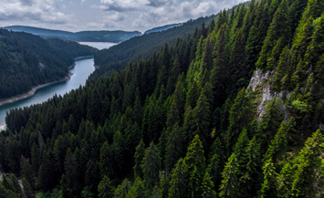 |
Canada |
|
Moose, Elk, Black Bears and Grizzly Bears. |
||
Serial number 3 |
Temperate |
Climate winter is very cold, Summer is hot and rainfall is moderate. |
central USA |
Grasses |
Coyote, Gophers, |
Prairie |
and Central |
shrubs, herbs |
Rabbits, Prairie |
||
Grasslands 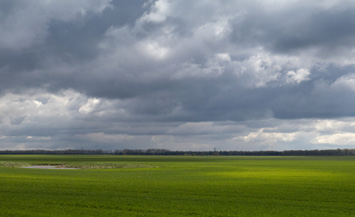 |
Canada |
|
Dogs and Bison |
||
Serial number 4 |
The |
Climate hot summer |
western Coastal |
Olive, Grapes |
Not much |
Mediterranean |
and, cool |
margin and |
Orange, Cork, |
wildlife is found |
|
Type |
winter. |
Southern |
Oak, Walnut |
here |
|
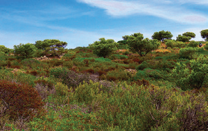 |
|
California |
and Fig |
|
|
Serial number 5 |
Desert Type 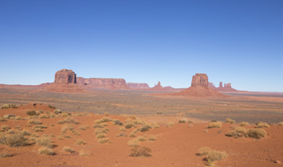 |
Climate winter is cool and summer is hot. The rainfall is very little |
southwest USA, Northern Mexico desert |
Cactus, Saguaro Cholla Cacti and yucca |
Desert Fox, Gazelles, Scorpions, Lizards and Rattle Snakes |
Serial number 6 |
Cool Temperate Deciduous Forests 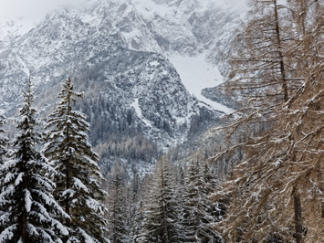 |
Climate summer is hot winter is mild and moderate rainfall. |
florida, Gulf Coast southeast USA |
Chestnut, Oak, and Poplar, Cypress |
Foxes, Squirrels, Deer, Raccoon Rabbits, and Musk Ox |
Serial number 7 |
The Tropical rain forests 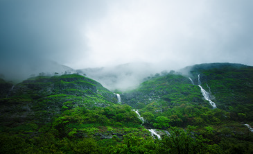 |
Climate Temperature and rainfall varies on the basis of height. |
southern Mexico, Central America and West Indies |
Palms, logwood, Mahogany, Rubber and Cacao Trees |
Monkeys and Snakes |
Serial number 8 |
Mountain Forests |
Climate temperature falls with rise in attitude. The rainfall received on the slopes varies. |
rockies Mountain |
Pine, Fir, Mosses and Lichens |
Deer and Bear |
Bison
Raccoon
Rattle Snake
Musk Ox
Though least proportion of the total workforce is engaged in agriculture. America's agriculture is most productive in the world. Extensive agriculture system is practiced in Canada and United Sates of America. Both Canada and United States of America are the major exporter of wheat than the other countries of the world. Wheat, Corn within bracket Maize, Oats, Soybean, Barley and many other food crops are grow well in the vast interior plains.
Wheat was introduced by European settlers in North America. It is grown extensively in the Prairies of North America. North America is the largest exporter of wheat. Vast wheat producing areas are called wheat belt.
It is the native food crop of North America which is the main staple food grains in Mexico. It is grown in southern Prairies.
North America produces more than half of the world total Maize.
These are temperate crops which withstand cold climate and less water. Barley is grown in the United States and are produced in Minnesota, North Dakota and Washington. Barley and Oats are used as cattle fodder.
Cotton grows well in Southern and Western States and it is dominated in Texas, California, Mississippi, South of the Prairies and the Mexico. Warm summer with frequent rainfall and fertile soil are favourable conditions for growth of cotton crop.
Sugar cane is cultivated along the Gulf of Mexico, Parts of Central America and West Indies. It is an important Cash Crop of West Indies. Cuba is known as the “sugar bowl of the world” and it is the world's largest exporter of sugar.
It is raised in the same area where Maize is grown. It is used for extraction of edible oil.
Potatoes and Sugar beet Prairie Region, North Dakota and Minnesota are the producers of Sugar Beets and Potatoes. Sugar beet is used for making Sugar. Potato and Sugar Beet are used to feed cattle and pigs.
Mainly Citrus fruits are cultivated in Texas, California, Great Lakes regions and Saint Lawrence Valley. The important fruits of North America are Cranberries, Blueberries, Concord Grapes, Strawberries, Gooseberries and the other fruits.
Cattle rearing are carried on a commercial scale in the drier parts of the Prairies in the South Western part of the United States. Vast herds of Cattle and Sheep are kept on large Ranches. Richer pastures are used for cattle and poorer sparse pastures are used for sheep. North America is the largest producer of meat and about one fourth of the world production.
Dairy farming refers to rearing cattle for milk. It is an important industry of United States of America and Canada. Dairy farming is found in the cooler and humid part of the Prairies, Great Lakes areas and north east region along the Atlantic coast. North America produces about 25 percent of the world total milk and dairy products.
Fishing is locally important in the seas around the continent. The Grand banks is one of the world's best fishing grounds. It is located in the island of Newfoundland in Canada. Here the meeting of Cold Labrador current and Warm Gulf Stream current provides suitable condition for fish to thrive. The cold Labrador Current brings plenty of plankton which provides food for fish. Cod, Herring, Mackerel, Salmon and Halibut are the major varieties of fish in North America.
DO YOU KNOW?
Grand Banks: The Grand Banks is among the world's largest and richest resource areas, renowned for both their valuable fish stocks and petroleum reserves.
North America has rich mineral resources. North America is the leading producer of Iron Ore, Petroleum, Natural Gas, Copper, Silver, Sulphur, Zinc, Bauxite and Manganese. Lead and Uranium are the other important minerals. North America has vast deposit of Oil and Natural Gas. The United States, Canada and Mexico are among the world top Oil producers.
Important Minerals in North America
Mineral |
Area |
Mineral Iron Ore |
Area Canadian shield, Great Lake region, Appalachian Highlands, central Alabama, Minnesota's |
Mineral Copper |
Area Great lakes, Arizona, Utah, New Mexico, Nevada, Montana and Rockies mountains, Ontario, British Columbia |
Mineral Silver |
Area Nevada, Utah, British Columbia, Ontario, Quebec. |
Mineral Gold |
Area Canada –Ontario, Quebec United States of America – California, Colorado, Utah, Nevado. |
Mineral Coal |
Area Appalachians, Pennsylvania, Ohio, Alabama, Alberta and Columbia |
Mineral Petroleum |
Area United States of America Alaska to Texas Canada, Mexico |
Mineral Oil and Natural Gas |
Area Central low lands, Gulf coast Rockies, Appalachian, Alaska |
North America has plenty of resources and is needed for industrial development. Industries are highly concentrated in the north eastern part of the continent because of large minerals deposits like coal, iron ore etc., and good transportation network like roads, railways and canals. The United States is one of the most industrialized countries in the world. Industries contribute about 25 Percent of Gross National Product. The United State ranks first in Iron and Steel industry. They use the latest technology in developing their industries.
The North American continent is the world's most important Iron and Steel industrial centre. Iron and Steel industries require Iron Ore, Coal and transportation. The important centres of the Iron and Steel industries in North America are Pittsburgh, Chicago and Birmingham in the United States and Hamilton
in Canada.
Industries which require heavy and bulky raw materials using enormous amounts of power, involvement of huge investment and large transport costs are called heavy Engineering industries. These industries depend heavily on the Iron and Steel industry. The important Heavy Industries are automobile industries, aircraft industries, ship building industries, Railway Wagon industries and farm equipment industries. The United States of America is the largest producer of automobiles. The important Centres of heavy
engineering industries are Detroit, Chicago, Buffalo, Indianapolis, Los Angeles, Saint Louis, Philadelphia, New York, Baltimore, and Atlanta in United States of America and Windsor in Canada.
About 50 per cent of the world’s wood pulp and newsprint is produced by North America. Canada is the largest producer and exporter of all kinds of paper in the world. Paper industries are particularly concentrated in Ontario in Canada.
The textiles industry includes the manufacturing of all textiles like cotton, woolen, and synthetic. The United States is the largest producer of Cotton Textiles. The industries are mainly located in Texas. California, Arizona, Mississippi, Arkansas, and Louisiana. Toronto, Cornwell and Kingston are the major centres in Canada. Moreover, the cool and wet climate of the area is most suitable for spinning and weaving, as the yarn does not break frequently. The Woolen Textile industries are located in
the east of the Alleghany Plateau. The New England region contains 70 percent woolen textile industries. North America is the second largest producer of synthetic fibers. Rayon and other synthetic fibers are made up of cellulose obtained from wood Pulp.
This is an important industry in Canada and United States of America where cattle rearing is done on a large scale in the Prairies. Chicago, Kansas City, Saint Louis in the United States and Calgary and Winnipeg in Canada are the important meat-packing centres.
Most of the people in North America are descendants of settlers from other parts of the World. The first among them were, the Europeans, arrived in the 16th century. Today, the small groups of Native Americans that remain have their own territories and followed a traditional way of life.
The current population of North America as 364,446,736 in the year 2018. North America has about 4.77 percent of the total world's population. The largest country by land area is Canada. The largest city by population is Mexico City. The population density is about 20 persons per Square kilometers.
Serial number
|
Country |
Population within Bracket in Millions |
Density
|
Serial number 1.
|
United States Country
|
Population 327.16 Millions
|
30 persons Density |
Serial number 2.
|
Canada Country |
Population 36.95 Millions |
3 persons Density |
Serial number 3. |
Mexico Country
|
Population 123.00 Millions |
51 persons Density |
Population and Density of North America.
Densely populated areas: Eastern part of North America, Great Lakes region, Florida, California, Mexico and Central America are the mostly densely populated areas.
Moderate populated areas: Central part of United States, Central Highland, Highlands of Mexico, Central and western Canada are the Moderate populated areas.
Sparsely populated areas: Northern Canada, Alaska, Rocky Mountain regions and desert regions are sparsely populated areas.
Languages and Religions most of the people speak English, Spanish and French. Various faiths have been a major influence of culture, philosophy and law. Between them 80 Percent of the people follow Christianity. United States of America is known as “Melting Pot”where hundreds of different cultures meet, blend and creating a new culture.
BOX ITEM:
Eskimos live in the very cold and inhospitable region where plenty of fish varieties are available. They were able to dress themselves in thick warm clothes made of fur, they live in igloos.
Their lives were very simple and they could not alter the environment to any extent. They specially designed a house by ice and is known as igloos.
North America has developed a well designed network of roadways within bracket freeways railways, waterways and airways.
North America especially United States of America and Canada have the best laid roadways in the world. They are made of Asphalt and Concrete roads can be used in all weather conditions. The Super Ways within Bracket or Free ways make travelling easy and fast. The Pan American highway runs from Alaska in the far North west to Panama in the south.
North America is extensively served by an efficient network of railway. Tarns Continental railways and Tarns-Canadian railways are link the east and west coast of Canada and United States. Chicago has the
biggest railway junction in the world. The New York railway junction is one of the busiest railway stations in the world.
The Great Lakes region along Saint. Lawrence and Mississippi rivers are the most important inland waterway in North America. Quebec City, Montreal, Boston, New York, Philadelphia, Charleston and New Orleans are some of the important inland ports. New York is the most important port along the East coast. Vancouver and San Francisco are important ports on the West Coast of North America.
DO YOU KNOW?
Panama Canal: In 1914 a Canal was cut across the Isthmus of Panama for 80 kilo meter long which connects the Atlantic with Pacific Ocean.
It greatly reduced the distance between Europe and the West Coast of North and South America.
Airways provide in valuable means of transport. All the cities and industrial centres in North America are linked by airways. New York, Chicago, Los Angeles, Atlanta, Toronto, Montreal and Mexico City are some of the international airports in North America.
North America exports a host of agricultural and industrial products. The main exports are Industrial Machinery, Automobile, Paper, Fish, Wheat, Bananas, Meat, Aircraft, Telecom Equipments, Chemical, Plastics, Fertilizers, Wood Pulp, Timber, Crude Oil, Natural Gas, Aluminum, Nickel and Lead. The countries of North America Imports include Coffee Cocoa Sugar, Textiles, Iron ore and Electronics goods. The countries of Europe, Japan, China and India are the major trading partners.
Next to Asia, Africa and North America, South America is the fourth largest country in the World. Most of the South American continent lies within the Southern Hemisphere and hence called as the “Southern Continent”. The Isthmus of Panama in the North West connects South America with North America.
DO YOU KNOW?
Together with the Central America, South America is also known as Latin America, having been discovered and colonized mostly by the Latin’s That is, The Spanish and the Portuguese.
South America lies between 12degree North to 55degree South latitudes and 35degree West to 81degree West longitudes.
The Equator within bracket 0-Degree latitude passes through the mouth of the Amazon River. The Tropic of Capricorn within bracket 23 half degree South longitude passes through the Rio de Janeiro in Brazil. South America is inverted triangular shaped landmass. The area of the continent is 17.8 million Square kilometer., which occupies 12 percent of the world's land area.
South America has marked resemblances in structure and relief of North America. South America has some of the oldest and the youngest rocks of the world. On the basis of topographical features, the continent may be divided into the following physiographic divisions:
The Andes are fold mountains like the Himalayas. This is the longest mountain range in the world and extends for more than 6,440 kilometers along the Pacific Coast. The highest peak in the Andes is Mount Aconcagua within bracket an extinct volcano in Argentina border which reaches at an elevation of 6,961m. In Chile, the mountains run very close to the coast. The slopes are steep on the western side and gentle on the eastern side like Rockies in North America. The Andes being a part of the Pacific Ring of Fire these places are subject to great volcanic eruption and earthquake activities. There are some active volcanoes like Mountain Cotopaxi within bracket 5,991 meters on the Andes range. The Andes are rich in minerals like Copper, Tin and Precious Gems including Emeralds.
Nearly half of the Continent is covered by the plains. Three great rivers drain into the Atlantic Ocean. The biggest of them is the Amazon. The Amazon basin consisting mainly of the alluvial deposits is the thickly forested part of the world. It is widest near the Andes and narrowest near the mouth of the Amazon River. The Orinoco basin is separated from the Amazon basin by low interfluves. It is also one of the most productive parts of the continent. The Parana - Paraguay plain is an ancient rocky surface covered with alluvial deposits and is rich in petroleum deposits.
These are considerably older than the Andes and are mainly Plateau which is cut by many rivers. They lies to the north and south of the Amazon River. The Guiana Highland is located in the northern part of the continent which has a number of waterfalls including the Angel Falls. The Brazilian Highlands are found to the south of the Amazon basin. They are gently rolling plateaus with steep cliffs along the east coast.
The climate of the continent of South America has been closely influenced by the latitudes, altitudes and the proximity of the Pacific and Atlantic Oceans. It is hot in the Amazon basin as the equator passes through it whereas Quito, situated almost on the same latitude on the Andes, has “Eternal Spring”. That is, it has a pleasant climate throughout the year because of its high altitude at 9,350 feet within bracket or 2849.88 meter above the sea level. Most of South America regions have its summer from November to January. When it is quite hot in Brazil, Argentina has a relatively cooler climate because of its location in more southerly latitudes. The rainfall distribution is mainly controlled by the physical features and the distance from the sea. The trade winds bring a lot of rain to the east coast and the Westerlies to the west coast. However, the Amazon basin gets rainfall everyday because of its equatorial location. The regions around the Equator get what is called “4’o Clock
DO YOU KNOW?
Rains” which are convectional rains. Rainfall decreases towards the interior.
In equatorial regions convectional rain occurs almost daily in the afternoons. It generally occurs at 4 Post Meridiem that’s why it is known as 4’ o Clock Rain.
Owing to the position of the Andes all the great rivers of the continent drain into the Atlantic. The Pacific streams are short and swift but along the coastlands of Peru their waters are used for irrigation and to some extent for hydro-electric power. Amazon is the longest river of South America within bracket 6,450 kilometer and is the largest river system in the world. This river have over a thousand of tributaries. The rivers Rio Negro, Madeira and Tapajos are important tributaries. At the point where it enters the sea the river is so wide and powerful that it flows even at a distance of 80 km into the high seas. The Orinoco River originates in the Guiana Highlands and flows northwards into the Caribbean Sea. The river Paraguay has the Paraná and Uruguay rivers as the main tributaries which together form and known as the Platte River system. All the rivers are navigable for quite some distance in the interior.
DO YOU KNOW?
Amazon is the greatest river of South America and the largest drainage system in the world in terms of the volume of its flow and the area of its basin.
There are four main natural vegetation areas of South America and are the Amazon basin Within Bracket the Selvas , the Eastern Highlands, the Gran Chaco and the slopes of the Andes. The Selvas of the equatorial regions are called the “lungs of the world”. The Amazon rainforest are the largest of their kind in the world. They abound in hardwood trees such as mahogany and Ebony which are very valuable. The other common species are Rosewood Cinchona and a variety of Palm trees. The bark of the cinchona tree is used for making quinine - the drug to cure Malaria. The Amazon rainforest are gradually getting depleted. Various developmental activities such as construction of transportation lines, human settlements and agriculture have led to widespread deforestation. Environmentalist fear that this might lead to serious ecological disturbance in future.
The Eastern Highlands have many varieties of trees which are of economic importance. The leaves of the Yerba Mate tree are used to make you tea - like drink. The Gran Chaco region has thick deciduous forests. An important hardwood tree found in these forests is the Quebracho Tree Within Bracket axe breaker. Quebracho tree yields tannin which is used for tanning leather. The forests on the slopes of the Andes have coniferous such as pine, fir and spruce. These forests are also called Montana. They yield valuable softwood for the paper and pulp industry.
South America is blessed with a variety of wildlife. The dense forests, swamps and rivers of the Amazon basin are particularly rich in different species of animals, birds and reptiles. More than 1,500 types of birds are found in the continent. The Condor is the largest bird prey, Rhea is the flightless bird much like the ostrich of Africa. Toucans, Macaw, Hummingbirds, Flamingoes and different type of Parrots are also found here. The forest is home to a variety of monkeys. The spider monkeys, howler monkeys, owl monkeys and squirrel monkeys are very gentle. The Anaconda which is one of the largest snakes in the world is also found here. Ancient madammals such as anteaters and armadillos are found in South America. Llamas are animals typical found only in South America. The rivers of South America have a rich variety of fish. The Piranha found in the Amazon is a fierce flesh eating fish.
Types of Forest, Flora and Fauna in South America
Serial Number |
Type of Forest |
Climate |
Region |
Flora |
Fauna |
|
Serial Number 1. |
Equatorial Forest |
Climate: Hot and wet climate throughout the year |
Amazon Basin, North eastern Brazil and Coastal Columbia |
Rubber, Mahogany, Ebony, Log wood, Brazil nuts and Ceiba |
Anaconda, Armadillo, Piranha, Monkey, Snake, Crocodile and Parrots. |
|
Serial Number 2. |
Temperate Forest |
Climate: Mild and wet climate throughout the year |
Southern Brazil, Southern Chile, Brazilian Highlands, Paraguay and Uruguay |
Beech, Conifers, Parana Pines and Quebracho |
White tailed Deer, Rraccoons, Opossums, Porcupines and Red Fox. |
|
Serial Number 3. |
The Mediterranean Forest |
Summer is hot and dry, Winter is mild and wet |
South Atacama desert, Central Chile |
Thorny Shrubs, Cactus, Evergreen Laurel and Acacia |
Not much wildlife is found here. |
|
Serial Number 4. |
The Savanna Grassland |
Summer is hot and Moist, winter is cold and dry |
Guiana Highlands, Brazilian highland, Northern Argentina and Paraguay |
Tall coarse grass and Acacias |
Capybara, Marshy Deer, White-bellied and Spider Monkey |
|
Serial Number 5 |
The Pampas Grassland |
Summer is quite warm, Winter is cold and moderate rainfall |
North Eastern part of Argentina, Uruguay and Southernmost Brazil |
Short grass |
Rhea, Pampas Deer, Jaguar, Guanaco, Camel, Mule and Stag |
|
Serial Number 6. |
The Desert |
Summer is hot and winter is cold |
Southern Argentina, Atacama desert, Southern Peru, Northern Chile and Northeast Brazil |
Scrubs, Cactus, Scrubs, Cactus, Cacti, Lichens and Acacia, |
Geckos and Iguana |
|
More than half of the people of South America live by farming. Subsistence farming is practiced in this continent. Most of areas are covered by forest like the Amazon basin. Only three countries, the Argentina, Uruguay, and Brazil have well developed agriculture. Argentina is one of the leading agricultural countries of South America. The agricultural activities are mainly concentrated in the wet Pampas. The Geo - climatic condition of Pampas are ideal for agriculture. Wheat and Maize are grown on extensive forms in the Argentine Pampas. In the piedmonts of Andes, where rivers descend and the climate is favourable, the farmers concentrate on the agricultural vineyards and other citrus fruits. Cash crops like coffee, cocoa, sugarcane, banana, cotton etc., are also grown in this continent.
The major wheat producers are Argentina, Brazil, Paraguay, Uruguay and the Chile. The Wheat is grown extensively on the Pampas of Argentina. Argentina is one of the largest producer and exporter of wheat in the world.
Sugarcane has been cultivated in the humid tropics of South America. Spanish and Portuguese introduced sugarcane to the West Indies and Brazil. Brazil is the largest producer of sugar in South America.
Maize is also known as corn. Maize is grown in the warmer part of the Pampas and coastal regions of Brazil and in some parts of the Amazon basin. It requires warm climate and frequent showers in summer. Argentina is one of the largest producer and exporter of maize in the world.
Coffee and Cocoa are the most important crops of South America. These crops need a warm temperature with frequent heavy rainfall and well-drained soil. They grow well in the red soil of the Brazilian Highland. Brazil is essentially an agrarian country. Brazil stands first in the production of Coffee and third in Cocoa in the world. Minas Gerais and Sao Paulo are the important Coffee growing areas in Brazil. It is also known as the “coffee pot” of the world. Colombia and Venezuela also grow large quantities of coffee. Coco is also grown in Ecuador and Colombia.
Cotton is another important cash crop of South America. Warm climate with frequent rainfall provides suitable condition for growing cotton. Cotton is the second most important crop in Brazil. Sao Paulo State produces half of the Country’s total cotton. Equator, Venezuela and Peru are the other important cotton growing countries in South America.
These are grown extensively in the Pampas. Barley is a member of the grass family and is a major cereal grain grown in temperate climates. Oats are grown in Argentina, Uruguay, Chile, Andean region, highlands of Bolivia, Ecuador and Peru. In most countries Oats are more important as fodder for livestock in the field.
Animal rearing is an important activity in South America. The Llanos and Campos in South America are the extensive Tropical Grasslands. Beef cattle are raised in Pampas in Argentina. Here cattles are mainly raised for draught purposes and meat. Llano grassland are found in the basin of Orinoco of Venezuela, Brazil and Columbia. Here most of the cattle are of Criollo breed well suited to the climatic conditions. Cattles are fed on alfalfa and the breeds raised here on large pasturelands known as “Estancias”.
Sheep are reared in the drier parts of South America. The temperate grasslands of Tierra Del Fuego and Falkland Islands are well suited for Sheep grazing. Argentina and Uruguay are the important sheep rearing
countries. Argentina is one of the largest exporters of beef in the world.
BOX ITEM:
Estancias
The Breeds raised on large pasture lands is known as Estancias. These are divided into several paddocks. Besides this, there are small yards known as corrals where animals are sorted and branded. The owner is the Estanciera who has a number of gauchos.
Peru is one of the world's largest producers of tropical fish. Here the cool Humboldt Current helps to bring plankton, which is the main food for fishes. Commercial deep sea fishing off of Peru’s coastal belt of over 3000kilometer. Peruvian waters normally abound with sword fish, mackerel, yellow fin, pompano and shark. More than 50 species are caught commercially. There are over 40 fishing ports on the Peruvian coast. Paita and Callao are being the most important centers in Peru. Besides coastal fishing inland fishing are also carried out in South America. River Amazon is a great aquarium. As many as 750 varieties of fish inhabit this river.
South America is rich in minerals. These mineral deposits are unevenly distributed. South America has many valuable deposits of minerals particularly of iron ore, manganese, petroleum, copper and bauxite. There are some active mines producing silver and gold. The continent has little coal which is still one of the mainstays of industrial economies. Northern Chile has the world's only natural deposits of sodium nitrate an important ingredient of fertilizers.
South America contains about one fifth of the world's iron ore reserves. Brazil and Chile both have massive deposits of iron ore. Brazil has the second largest iron ore deposits in the world after Russia. Brazil is estimated to have about 15 Percent of the world export of iron ore. High grade iron ore has long been mined at Itabira, Minas Gerais and new site in the Carajas.
Brazil also has large deposits of Manganese. Manganese ore is mined at Lafaiete, Minas Gerais and in the Northern State of Amapa.
Venezuela is rich in petroleum deposits. Argentina, Colombia, Ecuador, Peru, Chile and Bolivia are the other valuable oilfields. Petroleum is the only mineral produced in substantial quantity. Argentina is almost self-sufficient in petroleum. Venezuela is one of the world's leading producers of oil
and largest oil exporter outside the Middle East.
Chile is the third largest producer of copper in the world. Copper provides over 40 Percent of exports by value. Some of the biggest copper mines of the world are located in Peru. It is found in the Atacama Desert.
Brazil is the third largest bauxite producing country. An important bauxite mining centre is located near the mouth of the Amazon River. Bauxite is used for aluminium production.
Industries in South America have developed slowly Argentina, Brazil and Chile are the most highly developed industrial countries in this continent. Until World War I, the continent exported most of its mining production and large amount of minerals particularly Petroleum, Copper and iron are still exported. The continent lacks infrastructure Within Bracket especially transport which is an essential need for Industrialisation. Railways and the roads could not be developed sufficiently owing to a rugged terrain. The Amazon and the La Plata rivers, provide cheap water transport. In spite of having an abundance of natural resources, industrialisation started quite late in South America. Recently, new industries are being set up with locally available raw materials. Brazil is the most industrialized country in the continent followed by Argentina.
Serial number |
Country |
Industries |
Serial number 1 |
Country Brazil |
Iron and steel, cotton textiles, sugar, food processing, oil refining, chemicals and automobiles Industries. |
Serial number 2 |
Country Argentina |
Meat processing and Canning, dairy products, food processing, leather processing, woolen textiles, sugar and oil refining Industries. |
Serial number3 |
Country Chile |
Oil refining, chemical fertilizers and copper smelting Industries. |
Serial number 4 |
Country Peru |
Mining and the processing of minerals, chemicals, fertilizers, sugar, coffee and wool textiles Industries. |
Serial number 5 |
Country Uruguay |
Dairy products, meat processing and woolen textiles Industries. |
Serial number 6 |
Country Venezuela |
Oil refining, chemical fertilizers and copper smelting Industries. |
South America has significant role in the world trade. More than half of the South America’s trades are shared by Brazil, Argentina, Venezuela, Peru and Chile. South America’s major exports are mostly primary commodities such as sugar, coffee, cocoa, tobacco, beef, corn, wheat, petroleum, natural gas, linseed, cotton, iron ore, tin and copper. South America's products include mostly exported to North America and Europe. Its imports are machinery, vehicles, chemicals, pharmaceuticals, paper are textiles. These are imported from North America and Europe.
Unlike North America, South America still does not have an adequately integrated transportation network. Significant efforts have been made to improve both the connection within the countries and the linkages between them.
South America has an extensive and rapidly expanding network of roads. In many countries, however only a relatively small percentage of roads are paved and the most remote areas, they may be barely wide enough for two Vehicles to pass easily. A Road linking Venezuela and Brazil allows north to south movement through the Amazon Basin. Brazil continues to have the largest network of roads belonging to the Pan American Highway System which extends throughout the America's.
In most South American countries, railways have lost their dominant position of the major mode of transportation and have been replaced by the road networks that have developed rapidly since the 1960’s. Moreover, rail transport is plagued by operational problems as well as by obsolete equipment. Almost all lines are single-tracked which makes traffic slow and discourages passenger service. Many countries have two or more track gauges which impedes the efficient integration of the rails system.
Seaways have long been a vital component of the transport systems of South American countries. Majority of imports and exports to and from the continent are moved by ship. South America has a number of outstanding natural harbours. They are Rio de Janeiro, Salvador, Montevideo and Valparaiso. Several countries such as Chile and Brazil are making a determined effort to develop and enlarge their sea routes.
There are two inland waterways system of international importance. They are within bracket Number One The Paraguay - Uruguay basin which includes territory in four countries and within bracket Number Two The Amazon basin which includes six countries. Each has several thousand miles of navigable waterways.
Airways have developed rapidly since World War 2. The increase is particularly significant with respect to passenger traffic and also handling of bulky freights. All the South America capitals and most of the large cities are linked by direct air services to the major traffic centres of the United States and Europe.
South America contains the world's most mixed population. Many people in South America are descended from European, especially the Spanish and Portuguese, who begin to arrive during the 15th century. The descendants of African slaves brought over by the Europeans. Native people still live in the mountain and the rainforests and keeping their own languages and traditions. There are three major races found in South America and are within bracket Number One American Indian, Within Bracket Number Two European and within bracket Three Blacks. The mixed population of Native Indians and Europeans is known as ‘Mestizo’. The mixed population of European and the Blacks is called ‘Mulato’ and the mixture of Native Indians and Blacks is called ‘Zambo’. The current population of South America is 429, 115, 060 within bracket 42.25 cores. Population density of South America is 21 persons per square kilometer. South America is positioned 5th rank in total population among the continents.
Portuguese and Spanish are the primary languages of the South America. Among other
languages used by many South Americans are Dutch, French, English, German and Hindi. Christianity is the dominant religion in South America. Other than Christianity, Hinduism and Islam are also followed by South Americans.
DO YOU KNOW?
South American nations have variety of music. Some of the most famous genres include Samba from Brazil, Tango from Argentina and Uruguay and Cumbia from Colombia.
North America and South America
Serial Number. |
|
North America |
South America |
Serial Number 1. |
Geographical extent |
North America 7 Degree North to 84 Degree North latitude and 53 Degree West to 180 Degree West longitude. |
South America 12 Degree North to 55 Degree South latitude and 35 Degree West to 81 Degree West longitude. |
Serial Number 2. |
Major countries |
North America Canada, United States of America, Mexico |
South America Argentina, Bolivia, Brazil, Chile, Colombia, Ecuador, Guyana, Paraguay, Peru, Suriname, Uruguay, Venezuela |
Serial Number 3. |
Smallest country |
North America Grenada |
South America Suriname |
Serial Number 4. |
Highest point |
North America Mount McKinley |
South America Lake Maracaibo |
Serial Number 5. |
Surrounding water bodies |
North America Arctic Ocean, Pacific Ocean, Atlantic Ocean, Gulf of Mexico. |
South America Pacific Ocean, Atlantic Ocean, Caribbean Sea, Southern Ocean. |
Serial Number 6. |
Major rivers |
North America Mississippi River, Missouri River, Colorado River, Rio Grande, Yukon River |
South America Amazon, Parana, Madeira, Tocantins, Orinoco |
Serial Number 7. |
Largest lake |
North America Lake Superior |
South America Portuguese, Spanish, Dutch, English, French |
Serial Number 8. |
Major deserts |
North America Great Basin, Mojave, Sonoran and Chihuahuan deserts |
South America Atacama deserts, Patagonian, deserts |
Serial Number 9. |
Major animals |
North America Brown bear, bald eagle, humming bird, bullfrog, beaver, red cockaded woodpecker, red fox, bison |
South America Llama, anaconda, anteater, agouti, armadillo and chinchilla |
Serial Number 10. |
Major crops grown |
North America Maize, wheat, soyabean |
South America Wheat maize, rice, potato |
Serial Number 11 |
Major language spoken |
North America English, Spanish, French |
South America Cerro Aconagua Within Bracket Andes Mountains. |
Glossary |
|||
1. |
Isthmus |
A narrow stretch of land joining two large land masses |
நிலச்சந்தி |
2 |
Strait |
A narrow stretch of water joining two large water bodies |
நீர்ச்சந்தி |
3. |
Cellulose |
Obtained from wood Pulp |
மரக்கூழ் |
4. |
Prairies |
A temperate grassland of North America |
பிரெய்ரி புல்வெளி |
5. |
Igloos |
The specially designed a house by ice |
இக்லூ அடைப்புகுறிக்குள் எஸ்கிமோக்களின் வீடு |
6. |
The Pacific Ring of Fire |
These places are subject to great volcanic eruption and earthquake activities |
பசிபிக் நெருப்பு வளையம் |
7. |
Selvas |
A tract of land covered by dense equatorial forest in the Amazon basin. |
மழைக் காடுகள் |
8. |
Pampas |
A temperate grassland of South America |
பாம்பாஸ் |
9. |
4’o Clock Rain |
In equatorial regions, convectional rain occurs at 4 Post meridiem |
நான்கு மணி மழை |
10. |
Estancias |
The Breeds raised on large pasture lands |
செம்மறி ஆட்டுப் பண்ணை |
1. Choose the correct answer
1. The DASH separates North America from Asia
a) Bering Strait
b) Palk Strait
c) Malacca Strait
d) Gibraltar straits
ANSWER: a) Bering Strait
2. DASH is known as the “sugar bowl of the world”
a) Mexico
b) United States of America
c) Canada
d) Cuba
ANSWER: d) Cuba
3. DASH are the longest rivers in North America
a) The Mississippi and Missouri rivers
b) The Mackenzieriver
c) The Saint Lawrence river
d) The Colorado river
ANSWER: a) The Mississippi and Missouri rivers
4. DASH is the longest mountain chain in the world.
a) The Andes
b) The Rockies
c) The Himalayas
d) The Alps
ANSWER: a) The Andes
5. DASH basin gets rainfall every day because of its equatorial location
a) The Mackenzie
b) The Orinoco
c) The Amazon
d) The Paraná
ANSWER: c) The Amazon.
2. Fill in the blanks
1. DASH 86meter below the sea level is the lowest part of the continent of North America.
ANSWER: DEATH VALLEY
2. DASH is one of the world's best fishing grounds.
ANSWER: GRAND BANK
3. The highest peak in the Andes is DASH on the Chile - Argentina border.
ANSWER: MOUNT ACONCAGUA
4. DASH of the equatorial regions are called the “lungs of the world”.
ANSWER: AMAZON BASIN
5. DASH is also known as the “coffee pot” of the world.
ANSWER: BRAZIL
3. Match the following
1. |
Mount McKinley |
– Tropical forests |
2. |
Grand Canyon |
– The flightless bird |
3. |
Ebony |
– The Colorado River |
4. |
4’o Clock Rains |
– 6194 meter |
5. |
Rhea |
– The equatorial regions |
ANSWERS
3. Match the following
1. |
Mount McKinley |
– 6194 meter |
2. |
Grand Canyon |
– The Colorado River |
3. |
Ebony |
– Tropical forests |
4. |
4’o Clock Rains |
– The equatorial regions |
5. |
Rhea |
– The flightless bird |
4. Give Reasons
1. The eastern coast of North America particularly USA enjoys mild climate.
2. United States of America is known as “Melting Pot”.
3. Though Quito and Amazon basin are in the same latitude Quito enjoys eternal Spring. Whereas Amazon basin is hot.
4. Peru is one of the world’s largest producers of tropical fish.
5. Distinguish between
1.The Rocky mountain and the Appalachian mountain.
2. The Prairies and the Pampas grassland.
3. Tundra and Taiga.
6. Put (√) for the correct option
1. Assertion (A): Cotton grows well in southern and western states of North America.
Reason (R): Warm summer with frequent rainfall and fertile soil which provide favourable condition.
Option A) Both A and R is correct.
Option b) A is correct and R is wrong.
Option c) A is wrong and R is correct.
Option d) Both A and R is wrong
ANSWER: a) Both A and R is correct.
2. Assertion (A): Industries in the South America has developed rapidly.
Reason (R): The continent lacks infrastructure within bracket especially transport need for industrialization.
Option a) Both A and R are correct.
Option b) A is correct and R is wrong.
Option c) A is wrong and R is correct.
Option d) Both A and R are wrong
ANSWER: d) Both A and R are wrong
7. Answer the following
1. Name the boundaries of North America.
2. Write a note on Mackenzie River.
3. What type of fruits are cultivated in North America? Name some of them.
4. Give a short note about the lifestyle of an Eskimos.
5. Which are the densely populated areas of North America?
6. Name the physiographic divisions of South America.
7. What is called “4’o clock rains”?
8. Name the flora and fauna of equatorial forest in South America.
9. What is known as “Estancias”?
10. Name the major export of South America.
8. Answer the following in a paragraph
1. Give an account of the climate of North America.
2. Describe the Heavy Engineering Industries in North America.
3. Describe the drainage system in South America.
4. Write briefly about the major races in South America.
9. Map skill
1. With the help of the map given in the text and an atlas, name the seas and bays in North America.
2. Mark the rivers Amazon, Orinoco, Negro, Paraguay, Uruguay on a map of South America.
10. Activity
1. Given below are some important cities with industries placed in brackets. Pick out the correct answer from them.
a) Pittsburgh Within Bracket Textile, Iron and steel, Shipping
b) Chicago within bracket Meat Packing, Woolen textile, Heavy Engineering
c) Ontario within bracket Automobile, Paper, Cement
d) Chile within bracket Oil refinery, Sugar, Cotton textile
e) Uruguay within bracket Leather processing, Copper smelting, Daily products
2. Write down the answers to the question given in blocks:
a) Name the highest peak in South America. Blocks given
|
|
|
|
|
|
|
|
|
b) An active volcano in South America. Blocks given
|
|
|
|
|
|
|
|
c) The combined Parana and Paraguay rives. Blocks given
|
|
|
|
|
d) The highest falls in the world. Blocks given
|
|
|
|
|
e) The largest river in the world. Blocks given
|
|
|
|
|
|
References
1. World Geography, Alka Gautham, within bracket 2013,
Sharda Pustak Bhawan, Allahabad-211002.
2. Purnell’s concise Encyclopedia of Geography
– C.J. Turnney, Within Bracket 1984 ,Little Hampton Book
Services Ltd, United Kingdom.
3. The World Geography by Time life within bracket 1999,
United States of America.
4. The illustrated Encyclopedia of Geography, within bracket 2005, Pentagon Press, Uninted States of America.
5. A Dictionary of Geography, Mayhew Susan,
Within Bracket 2015, Oxford University Press, United Kingdom 2
To know about the maps and scale
To identify the various types of maps
To understand the elements of maps
To learn the legend and signs and symbols
Reading of maps will give clear understanding of geographical location, physiographic features like mountains, plateaus and plains, water features river, lake, ocean etcetera., and cultural features, such as roads, settlement etc., The maps are meant to be the preserving records of the past which will helps us to understand the past and perceive the future. Maps portraits political boundaries of different countries and states. It helps the students to visually understand the size and shape of various countries, continents Etcetera., Maps clearly refer to the properties that people own and the geographical boundaries.
A map is an essential tool of a geographer. Map is a representation of the earth as a whole or a part of the earth drawn on a flat surface according to a given scale. It can show continents, countries, cities and even a local area are drawn with specific details. It is easy to handle and carry as it can be rolled up Within Bracket or folded and stored in computers.
DO YOU KNOW?
In the early times, various materials such as animal skin, cloth, parchment, papyrus, wet earth and clay tablets were used to make maps.
As each map is unique in its design, content and construction. On the basis of certain common features maps can be classified into several types.
Maps DIVIDED IN TO TWO
On the basis of Scale 1, Large Scale 2. Small Scale
Maps DIVIDED IN TO TWO
On the basis of Content
characteristics
Large scale maps show small areas in greater details because they are drawn on a relatively large scale.
• Cadastral maps are village and town maps which show individual fields and house sites.
• Topographical maps shows smaller areas in much greater details about small area. These maps are prepared by Survey of India. These are also large scale maps which show both natural features like hills and valleys as well as man-made features like buildings, road and canals.
Small scale maps that show large areas like continent or countries. These maps are drawn on 1Centimeter Equal To 1000 Kilometer. These are called small-scale maps
• Wall maps are small-scale maps showing large areas. They are useful for students in classrooms and offices, small scale maps covers a larger area and depicts with limited information.
• Atlas is a collection of maps in a book. Atlas maps are small-scale maps covering large areas like continents and countries. Only prominent relief features, main roads and railways important towns are shown in Atlas maps. The study of geographic
characteristics of a large area is possible at the time with the help of an atlas.
DO YOU KNOW?
The science of map-making is called cartography within bracket carte means ‘map’ and graphic means ‘drawing. One who draws maps is called a Cartographer.
• School Atlas contains the maps giving sufficient details of the home and country.
• Advanced Atlas contains detailed maps of even small regions of the continents and are used as reference atlases.
• Regional Atlas contains detailed maps of small areas, prepared with a view to help in regional planning.
• National Atlas contains detailed maps of a country. The maps of a national atlas are comparatively large-sized and they depict general and characteristic features of the geography of a country.
Physical maps show natural features such as relief, geology, soils, drainage, elements weather, and vegetation.
Relief maps show general topography like mountains valleys, plains, plateaus and rivers.
• Geological maps are drawn to show geological structures, rocks and minerals.
• Climatic maps show the distribution of temperature, rainfall, clouds, relative humidity, direction and velocity of winds and other elements of weather.
• Soil maps which are drawn to show the distribution of different types of soil and their properties.
Cultural maps which shows the man-made features are called cultural maps.
• Political maps show the administrative divisions of a country, state or district. These maps facilitate the administration in planning and management of the concerned administrative units.
• Population maps show the distribution, density and growth of population, occupation structure and literacy.
• Economic maps depict the production and distribution of different types of crops and minerals, location of industries, trade routes and flow of commodities.
• Transportation maps show roads, railway lines and the location of railway station, airports and seaports, Etcetera.,
• Thematic maps represent the distribution of a particular feature or theme and its spatial variation.
DO YOU KNOW?
Digital maps is a web-based service that provides detailed information about geographical regions and sites around the world.
Maps provide us with a lot of information and one must know how to read and interpret them. Every map is provided with certain features that help us to study the information presented in it. The basic essential elements of a map are title, direction, scale and legend Within Bracket or key and signs and symbols.
Every map has a title that describes the information given in the map. For example, a map with the title India Rivers shows Rivers of India.
In general maps are drawn with North orientation. It helps us to find other direction on the map like East, West and South. In addition to the North notation, latitudes and longitudes are depicted in the margins. The North is notified by letter ‘N’ with an arrow mark.
The scale of a map is the ratio between the distance on the map between two points and actual distance between the two places on the ground. For example the scales can be represented as 1Centimeter Equal to 10 Kilo meter. It means 1 Centimeter on the map is equal to 10kilometer on the ground. It helps to find the distance on the map between two points.
A legend or key of a map explains the symbols that are used on it to represent various physical and cultural features. The common signs and symbols which are internationally accepted and used in maps are called conventional signs and symbols. Every map has a legend or a key which explains the different colours and symbols used in it. On a map it is difficult to show the real shape such as settlements, bridges, post offices, railway lines and forests They are depicted by using certain colours, symbols or letters.
Colours |
Features |
White |
Snow |
Yellow |
Agriculture |
Green |
Forest |
Blue |
Water bodies Within Bracket oceans, seas and rivers |
Brown |
Mountain, Hill and Contour |
Red |
Settlements, Road |
Black |
Railway line |
A sign is a widely used symbol or a line pattern or a colour on a map. It represents a feature on the ground. The Survey of India within bracket SOI have standardized a set of convectional signs and symbols. Several colours are commonly used in the map.
1. Maps enable us to know details of the landforms.
2. Maps help the military personnel to campaigns.
3. It is used in the aero planes and ships.
4. Maps are used for weather forecasting.
Comparison of Map and Globe
A map is a two – dimensional form of the Earth. |
1. A globe is three –dimensional model of the Earth. |
2. A map shows a small or a large area. |
2. A globe is a true model of the earth |
3. A map can show a detailed information about an area . |
3. A globe cannot show the detailed information for an area. |
4. A map is very easy to carry |
5. A globe is not easy to carry. |
Glossary |
|||
1. |
Map |
Representation of Earth on a flat surface |
நிலவரைபடம் |
2. |
Scale |
Ratio between the Actual distance of two points on the earth and the distance on a map |
அளவை |
3. |
Legend |
It is a representation of different geographical features by using different colours and symbols |
குறி விளக்கம் |
4. |
Relief maps |
map that shows the physical appearance of hills, mountains, ridges, valleys, slopes |
நிலத்தோற்ற வரைபடம் |
5. |
Atlas |
Collection of several maps |
வரைபடம் |
6. |
Cardinal direction |
North, south, east and west are called cardinal direction |
முதன்மையான திசைகள் |
7. |
Thematic map |
Represent the distribution of a particular feature. |
கருத்துப்படம் |
8. |
Graduated |
Arranged in a series |
பகுத்துக்குறியிட்டஅளவு |
1. Choose the correct Answer:
1. The science of map making is called DASH
a) Geography
b) Cartography
c) Physiography
d) Physical Geography
ANSWER: b) Cartography
2. North, South, East and West are four directions are called as
a) Cardinal
b) Geographical
c) Latitudinal
d) Angels
ANSWER: a) Cardinal
3. Cultural maps are those which shows the DASH features
a) Natural
b) Man made
c) Artificial
d) Environmental
ANSWER: b) Man made
2. Fill in the blanks:
1. DASH is an essential tool of a geographer.
ANSWER: MAP
2. The directions in between the cardinal directions are the inter mediate DASH.
ANSWER: DIRECTIONS
3. DASH in a map which explains the different colours and symbols used in it.
ANSWER: LEGEND / KEY
4. Cadastral maps are known as DASH.
ANSWER: VILLAGE AND TOWN MAP
5. Small scale maps are helpful to us to show large areas like DASH and DASH.
ANSWER: CONTENENTAL AND COUNTRIES
3. Circle the odd one:
1. North East, Scale. North West and East.
ANSWER: Scale
2. White, Snow, High land, and Plains.
ANSWER: Plains
3. Relief map, Soil map, Physical map and Atlas.
ANSWER: Physical map and Atlas
4. Weather Forecasting, Climate, Rainfall and Temperature.
ANSWER: Climate
4. Match the following:
1. |
Upper right corner |
– Density and growth |
2. |
Key Within Bracket or legend |
– District Within Bracket or town |
3. |
Large Scale map |
– Natural relief features |
4. |
Physical map |
– Colours and Symbols |
5. |
Population map |
– ‘N’ letter |
ANSWER:
1. |
Upper right corner |
– ‘N’ letter |
2. |
Key Within Bracket or legend |
– Colours and Symbols |
3. |
Large Scale map |
– District Within Bracket or town |
4. |
Physical map |
– Natural relief features |
5. |
Population map |
– Density and growth |
5. Examine the Following Statements:
1. An Atlas is a bound volume of different types of maps
2. Atlas maps are drawn on smaller scale
3. Insignificant details are omitted
a) 1 and 3 are correct
b) 2 and 3 are correct
c) 1 and 2 are correct
d) 1, 2 and 3 are correct
ANSWER: d) 1, 2 and 3 are correct
2. Statement 1: Globe is a three-dimensional model of the Earth.
Statement 2: It is easy to handle and to carry. as it can be rolled up or folded.
(a) Statement 1 is correct and 2 is wrong.
(b) Statement 1 is wrong and 2 is correct.
(c) Both the statements are correct.
(d) Both the statements are wrong.
ANSWER: (a) Statement 1 is correct and 2 is wrong.
6. Name the following:
1. Representing the earth on a flat surface.
ANSWER: MAP
2. Ratio between the distance on a map and distance on the ground.
ANSWER: SCALE
3. Symbols which help to show road ways and railways.
ANSWER: ROAD AND RAILWAY
4. A book which contains different kinds of maps.
ANSWER: LAND MAP
5. A map which shows administration divisions.
ANSWER: POLITICAL MAP
7. Answer the following:
1. What is a map?
7th
2. What is cartography?
3. What are cardinal directions?
4. What is an Atlas?
5. Name the types of Atlas?
6. What are the uses of maps?
8. Answer in Detail:
1. What are the elements of maps? Write about it?
2. What are the three ways of representation of maps?
3. Classify the maps based on functions
4. Write about comparison of map and Globe
5. Describe the types of maps based on the scale? Write about it?
9. Higher Order Thinkings
1. Map is an essential tool for a traveller why?
10. Activity:
1. In an outline map of India mark the following features by using symbols and colours
a) Mark any one of the District capitals.
b) Draw any one river path
c) Mark any one of the mountains
2. Draw the convectional signs and symbols to given points
a) Bridge
b) Canal
c) Dam
d) Temple
e) Forest
f) Railway Station
References:
1. Practical Geography R. L. Singh Practical Geography
2. RP. Misra, A. Ramesh Within Bracket 2002 Fundamental of Cartography, published and printed by Ashok kumar Mittal. New Delhi.
Everyday almost all the newspapers and television news channels carry reports on Natural hazards and disasters that occur in several parts of the world. Neither all the hazards nor all the disasters can be preventable but the destruction can be minimized.
For better understanding, we must know, what is a Natural Hazard? What is a Disaster? What is Disaster Management? Let us learn about some important terminologies along with disaster management techniques.
Generally, a hazard is a dangerous phenomenon, substance, human activity or condition that may cause loss of life, injury, health impacts, property damage, livelihoods, services, social and economic disruption or environmental damage. Natural hazards are natural phenomenon that might have negative impact on human or the environment. Natural hazards are classified into two broad categories: Geophysical and biological.
A disaster can be generally defined as “A serious disruption in the society causing widespread material, economic, social or environmental losses which exceed the ability of the affected society to cope using its own resources”. Disaster impacts may include loss of life, injury, disease and other negative effects on human physical, mental and social well-being, together with damage to property, destruction.
of assets, loss of services, social and economic disruption and environmental degradation. Hazards are termed as Disasters when they cause widespread destruction of property and human lives.
Hurricane is a natural hazard. It develops at sea. When it reaches land and destroys buildings and kills people, it can be described as a disaster.
Types of Disasters
Types of Disaster |
Sources |
Events |
1 Natural Disaster |
Sources Beneath the Earth Surface |
Events Earthquakes, tsunamis and volcanic eruptions |
Sources On the Earth Surface |
Events Landslides and Avalanches |
|
|
Sources Meteorological / Hydrological |
Events Windstorms, Tornadoes, Hailstorms and Floods |
Sources Health |
Events Epidemics |
|
2 Man-made Disaster |
Sources Socio - technical |
Events Technological, Transportations disasters, Structural collapse and production failures. |
Sources Warfare |
Events National and International |
A sudden movement within bracket or trembling of the earth crust is called as earthquake. The movement of the tectonic plates, mass wasting, landslides, surface fault, etc., causes earthquake.
Due to a strong earthquake, loss of lives, buildings, roads, bridges and dams are damaged. Earthquake cause floods, tsunamis, landslides, fires, breakdown of water supply and electrical lines. It may change the course of a river too.
On Second to Third May 2018 a high velocity dust storms swept across the parts of North India and more than 125 people died and over 200 were injured. In Uttar Pradesh 43 died in the city of Agra and about 30 died other parts of the state. In neighbourhood of Rajasthan state 35 people died and over 200 were injured. The wind downed more than 8000 electricity posts and uprooted hundreds of trees.
After 2004 tsunami, cyclone Gaja is the worst natural disaster to hit Tamilnadu. It left a trail of destruction in several coastal districts and took a toll on agriculture to a serious extent.
When earthquake jolts the ocean floor, the sudden dislocation of the sea bed occurs and the resulting displacement of water can produce one or more huge, destructive waves, known collectively as a Tsunami. The sea waves rise to several meters and may reach the coast within a few minutes.
It causes flooding and disrupts transportation, power communication and water supply.
DO YOU KNOW?
The word “Tsunami” is derived from the Japanese word. “Tsu” means harbour and “nami” means waves.
Sudden overflow of water in a large amount caused due to heavy rainfall, cyclone, melting of snow, Tsunami or a dam burst.
1. Loss of life and property
2. Displacement of people
3. Spread of contagious diseases such as Cholera and Malaria Etcetera.,
A low pressure area which is encircled by high pressure wind is called a cyclone.
The main effects of tropical cyclone include heavy rain, strong wind, large storm surges near landfall and tornadoes.
"Severe cyclonic storm Gaja crossed the coasts of Tamilnadu and Puducherry around Vedaranyam and Nagapattinam in the early hours of November 10, 2018 Friday with wind speed gusting of around 120 Within Bracket Kilometre per hour " reported the Indian Meteorological Department.
The term stampede is a sudden rush of a crowd of people, usually resulting in injuries and death from suffocation and trampling. It is believed that most major crowd disasters can be prevented by simple crowd management strategies. Human stampedes can be prevented by organization and traffic control, such as barriers, following queues and by avoiding mass gathering.
Fire is a disaster caused due to electrical short circuit, accidents in chemical factory, match and crackers factory.
Fire involves 3 basic aspects
1. Prevention
2. Detection
3. Extinguishing
Public awareness of what to do before fire, during fire and after fire is of critical importance.
Industry faces multiple risks involved with its production, transportation, storage, usage and disposal of the effluents containing residuals and hazardous materials from nuclear and chemical industries.
Example: Bhopal gas leakage
The systematic process of applying administrative directives, organizations, and operational skills and capacities to implement strategies, policies and improved coping capacities in order to lessen the adverse impacts of hazards and the possibility of disaster is called Disaster Management.
Disaster Management is necessary or expedient for:
• Prevention
• Mitigation
• Preparedness
• Response
• Recovery
• Rehabilitation
The six disaster management phases that have been used in the concept of disaster cycle are as follows
Reducing the risk of disasters involves activities, which either reduce or modify the scale and intensity of the threat faced or by improving the conditions of elements at risk. The use of the term reduction to describe protective or preventive actions that lessen the scale of impact is therefore preferred. Mitigation embraces all measures taken to reduce both the effects of the hazard itself and the vulnerable conditions to it, in order to reduce the scale of a future disaster. In addition to these physical measures, mitigation should also be aimed at reducing the physical, economic and social vulnerability to threats and the underlying causes for this vulnerability. Therefore, mitigation may incorporate addressing issues such as land ownership, tenancy rights, wealth distribution, implementation of earthquake resistant building codes etcetera.
The process includes various measures that enable governments, communities and individuals to respond rapidly to disaster situations to cope with them effectively. Preparedness includes for example, the formulation of viable emergency plans, the development of warning systems, the maintenance of inventories, public awareness and education and the training of personnel. It may also embrace search and rescue measures as well as evacuation plans for areas that may be “at risk” from a recurring disaster. All preparedness planning needs to be supported by appropriate rules and regulations with clear allocation of responsibilities and budgetary provision.
This is the process of monitoring the situation in communities or areas known to be vulnerable to slow onset hazards, and passing the knowledge of the pending hazard to people harmless way. To be effective, warnings must be related to mass education and training of the population who know, what actions they must take, when warned.
This refers to the “real-time event of a hazard occurrence and affecting elements at risk. The duration of the event will depend on the type of threat; ground shaking may only occur in a matter of seconds during an earthquake. Whereas flooding may take place over a longer sustained period.
Response
This refers to the first stage response to any calamity, which include setting up control rooms, putting the contingency plan in action, issue warning, action for evacuation, taking people to safer areas, rendering medical aid to the needy etcetera. simultaneously rendering relief to the homeless, food, drinking water, clothing etcetera. to the needy, restoration of communication, disbursement of assistance in cash or kind. The emergency relief activities undertaken during and immediately following a disaster, which includes immediate relief, rescue, and the damage needs assessment and debris clearance.
Recovery is used to describe the activities that encompass the three overlapping phases of emergency relief, rehabilitation and reconstruction.
Rehabilitation: Rehabilitation includes the provision of temporary public utilities and housing as interim measures to assist long-term recovery.
Reconstruction: Reconstruction attempts to return communities with improved pre disaster functioning. It includes replacement of buildings; infrastructure and lifeline facilities so that long-term development prospects are enhanced rather than reproducing the same conditions, which made an area or population vulnerable.
Development: In an evolving economy, the development process is an ongoing activity. Long term prevention/disaster reduction measures like construction of embankments against flooding, irrigation facilities as drought proofing measures, increasing plant cover to reduce the occurrences of landslides, land use planning, construction of houses, capable of withstanding the onslaught of heavy rain or wind speed and shocks of earthquakes are some of the activities that can be taken up as part of the development plan. Let us see in detail about a few disaster management measures that are in practice in India.
It is more cost-effective to mitigate the risks from natural disasters than to repair damage
after the disaster. Hazard mitigation refers to any action or project that reduces the effects of future disasters.
Department of Science and Technology within bracket DST Department of Space within bracket DOS and Council of Scientific and Industrial Research Laboratories have set up early warning system for tsunami and storm surges in the Indian Ocean. Disaster Management in India National Disaster Management Authority, abbreviated as National Disaster Management Authority is an agency of the Ministry of Home Affairs whose primary purpose is to coordinate response to natural or man-made disasters and for capacity-building in disaster resiliency and crisis response. National Disaster Management Authority was established through the Disaster Management Act enacted by the Government of India on Twenty Third December 2005. The National Disaster Response Force within bracket NDRF is a specialized force constituted for the purpose of specialist response to a threatening disaster situation or disaster under the Disaster Management Act, 2005.
National Institute of Disaster Management within bracket NIDM is a premier institute for training and capacity development programs for managing natural disasters in India, on a national as well as regional basis.
• Tamilnadu State Disaster Management Authority within bracket TNSDMA is responsible for all measures for mitigation, preparedness, response, and recovery are undertaken under the guidance and supervision of the Authority.
Tamilnadu State Disaster Response Force within bracket SDRF has been constituted with a strength of 80 Police Personnel. They have been trained in disaster management and rescue operations in consultation with National Disaster Response Force within bracket NDRF.
• District Disaster Management Authority within bracket DDMA is responsible for Disaster Management at district level State Disaster Management plan – The perspective plan From 2018 to 2030 prepared by the Revenue and Disaster Management Department.
Hot line between Indian Meteorological Department and the State Emergency Operation Centre is established and mitigation in the District is done through telephone, fax and Internet protocol phones also available which connect the State with District Head Quarters, Taluks and Blocks of the State. Wireless radio network with both high frequency and very high frequency are also available in the State.
General Survival Techniques
• During the earthquake be under the table, chair, kneel to the floor and protect yourself. Go near a sturdy wall, sit on the floor and hold the floor strongly and protect yourself.
• Use only torch lights.
• During flood forecast, store up necessary things like first aid. Listen to the local Radio / Television for instructions. Cut off all the electrical supplies during flood and earthquake.
• In case of fire accidents dial 101 for fire service.
• If clothes are on fire, “Don’t Run; Stop, Drop and Roll".
• Road accidents can be avoided by permitting the persons only who have license are allowed to drive. Learn, preach and practice safety rules during walking and driving along the road.
• Rail Safety Tips: Stay alert. Trains can come from either directions at any time.
• Never sit on the edge of the Station Platform.
• Cross the tracks safely.
• While on boarding the Air craft, pay attention to the flight crew safety demonstration, and read the safety briefing card available in the seat pocket carefully.
Both the hazard and the disaster cause enormous physical damage to property and even make huge loss of life.
Disaster management refers to conservation of lives and property during a natural or man-made disaster.
Preparation, Mitigation, Preparedness, Response, Recovery and Development are the six Disaster management cycles
The state and the central government have various disaster management organisations.
Earthquake, Tsunami, Flood Cyclone are some of the natural disaster.
Fire and Industrial accidents are few man-made disasters.
If any accidents occur dial 100 for Police, 101 for Fire service and 108 for the Ambulance
If clothes are fire “Don’t Run, Stop, Drop and Roll”.
Glossary |
||
1. |
Hazard |
a dangerous event |
2. |
Disaster |
an event which causes enormous damage to property and fife |
3. |
Vulnerability |
severity |
4. |
Mitigate |
reduce Within Bracket or make something less severe |
5. |
Meteorology |
forecasting of weather |
6. |
Trembling |
shaking or vibration |
7. |
Preventive |
stop something before it happens |
8. |
Extinguish |
to stop a fire or light |
9. |
Emergency |
a serious, or dangerous situation |
10. |
Psychological |
Mental or emotional state of a person |
1. Choose the correct Answer:
1. DASH is a event which causes enormous physical damage to property, loss of life and change in the environment.
a) Hazard
b) Disaster
c) Recovery
d) mitigation
ANSWER: a) Hazard
2. Activities that reduce the effects of disaster
a) Preparation
b) Response
c) Mitigation
d) Recovery
ANSWER: c) Mitigation
3. A sudden movement within bracket or trembling of the earth’s crust is called an DASH
a) Tsunami
b) Earthquake
c) Fire
d) Cyclone
ANSWER: b) Earthquake
4. A sudden overflow of water in a large amount caused due to heavy rainfall is called DASH
a) Flood
b) Cyclone
c) Drought
d) Seasons
ANSWER: a) Flood
5. Road accidents can be avoided by permitting the persons who have DASH is allowed to drive vehicle
a) Ration card
b) License
c) permission
d) Documents
ANSWER: b) License
2. Fill in the blanks:
1. A hazard is a DASH event that can causes harm or damage to human and his property
ANSWER: DANGEROUS
2. Activities taken during a disaster is called DASH
ANSWER: DISASTER MANAGEMENTS
3. Displacement of water can produce one or more huge destructive waves known as DASH
ANSWER: TSUNAMI
4. In case of fire accidents call the nearby police station or the no DASH for the fire service
ANSWER: 101
5. Disaster management refers to DASH of lives and property during a natural or man-made disaster
ANSWER: PROTECTION
3. Match the following:
1. |
Earthquake |
– Gigantic waves |
2. |
Cyclone |
– Creak / Fault |
3. |
Tsunami |
– Uneven rainfall |
4. |
Industrial accident |
– Eye of the storm |
5. |
Drought |
– Carelessness |
ANSWER :
1. |
Earthquake |
– Creak / Fault |
2. |
Cyclone |
– Eye of the storm |
3. |
Tsunami |
– Gigantic waves |
4. |
Industrial accident |
– Carelessness |
5. |
Drought |
– Uneven rainfall |
4. Consider the following statement and tick the appropriate answer
1. Assertion (A): In the modern world we can’t live happing every day.
Reason (R): Due to pollution and environmental degradation we are undergoing natural hazard and Disaster. Option a) A and R are correct and A explains R
Option b) A and R are correct but A does not explain R
Option (c) A is not correct but R is correct
Option d) Both A and R are in correct
ANSWER: (b) A and R are correct but A does not explain R
2. Assertion (A) Sudden movement within bracket or trembling of the earth’s crust is called an Earthquake Reason (R): Movement of the tectonic plates, mass wasting, surface fault all leads to earthquake
a) A and R are correct and A explains R
b) A and R are correct but A does not explain R
c) A is in correct but R is correct
d) Both A and R are in correct
ANSWER: b) A and R are correct but A does not explain R
5. Answer the following briefly
1. Define Hazard
2. What is disaster?
3. What are the six concepts of Disaster management cycle
4. Name any two agency which involves in warring system in Tamilnadu
5. Write about any three effects of flood
6. Give any four Rail safety tips
7. Name any four different industry which goes under industrial disaster frequently.
6. Distinguish between
1. Earthquake and Tsunami
2. Flood and cyclone
3. Hazard and disaster
7. Answer the following questions in detail
1. Write about disaster management cycle
2. Write about flood its effects and the mitigation
3. Write about any five general survival techniques
4. Write about earthquake, its effects, and mitigation steps
8. Higher Order Thinkings
1. Why should we know about the natural disasters?
2. Name four places in India which undergoes land slide.
ICT CORNER
Natural Hazards
To know about Natural disaster in detail through this activity.
PROCEDURE:
Step 1: Open the Browser and type the Uniform Resource Locator within bracket or Scan the Quick Response Code.
Step 2: Seismic monitor page will appear on the screen.
Step 3: On the right side of the screen select the place or area.
Step 4: Click the marked positions to view the detailed explanation about the disaster
Natural Hazard Uniform Resource Locator : http://ds.iris.edu/seismon/
“Feminism is not about making women stronger. Women are already strong. It’s about changing the way the world perceives that strength”.
“The story of women’s struggle for equality belongs to no single feminist nor to any one organisation but to the collective efforts of all who care about human rights”.
“You educate a man; you educate a man. You educate a woman; you educate a generation”.
To call woman the weaker sex is a libel; it is man’s injustice to woman –Mahatma Gandhi.
The empowerment and autonomy of women and the improvement of their political, social, economic and health status is a highly important end in itself. In addition, it is essential for the achievement of sustainable development.
Women’s empowerment and achieving gender equality is essential for our society to ensure the sustainable development of the country.
tween sex and gender. Sex is the biological trait that societies use to assign people into the category of either male or female. When people talk about the differences between men and women they are often drawing on sex on rigid ideas of biology rather than gender, which is an understanding of how society shapes our understanding of those biological categories. Gender is more fluid it may or may not depend upon biological traits. More specifically, it is a concept that describes how societies determine and manage sex categories; the cultural meanings attached to men’s and women’s roles; and how individuals understand their identities including, but not limited to, being a man, woman, transgender, and other gender positions. Gender involves social norms, attitudes and activities that society views as more appropriate for one sex over another. Gender is also determined by what an individual feels and does. The sociology of gender examines how society influences our understandings and perception of differences between masculinity Within Bracket what society views appropriate behaviour for a “man” and femininity within bracket what society views appropriate behaviour for a “woman”. We examine how this, in turn, influences identity and social practices.
BOX ITEM:
The essential factors for empowerment are:
1. Education: Education gives one the ability to think wisely and take thoughtful decisions.
2. Gender Discrimination: A Society which discriminates between the two genders can never be empowered.
3. Discrimination based on caste, creed, religion Etcetera.
Education is one of the most important means of empowering women with the knowledge, skills and self-confidence necessary to participate fully in the development process. More than 40 years ago, the Universal Declaration of Human Rights asserted that “everyone has the right to education”. Educating the girl child produces mothers who are educated and who will, in turn, educate their children care for their families and provide their children care and support. The girl child needs to be educated to acquire knowledge and skills needed to advance her status for social interactions and self-improvement.
BOX ITEM:
The sustainability and progress of all regions depend on the success of women across the globe. As the former President Barrack Obama said while addressing the United Nations General Assembly in 2012, “the future must not belong to those who bully women. It must be shaped by girls who go to school and those who stand for a world where our daughters can live their dreams just like our sons.”
1. Increased Literacy: Of the illiterate youth across the globe, nearly 63 percent are female. Offering all children education will prop up literacy rates, pushing forward development in struggling regions.
2. Human Trafficking: Women are most vulnerable to trafficking when they are undereducated and poor, according to the United Nations Inter-Agency Project on Human Trafficking. Through providing young girls with opportunities and fundamental skills, Human Trafficking can be significantly undermined.
3. Political Representation: Across the globe, women are under represented as voters and restricted from political involvement. The United Nations Women’s Programmes on Leadership and Participation suggest that civic education, training and all around empowerment will reduce this gap.
4. Thriving Babies: According to the United Nations Girls’ Education Initiative, children of educated mothers are twice as likely to survive past the age of five.
5. Later Marriage: As suggested by the United Nations Population Fund, in underdeveloped countries
one in every three girls is married before reaching the age of 18. In a region where a girl receives seven or more years of education, the wedding date is delayed by four years.
6. Income Potential: Education also increases a woman’s earning capabilities. According to the United Nations Educational, Scientific and Cultural Organisation, within bracket UNESCO a single year of primary education has shown to increase a girl’s wages later in life by 20 percent.
7. Prospering Gross Domestic Product: Gross Domestic Product also rises when both girls and boys are being offered educational opportunities. When 10 percent more women attend school, Gross Domestic Product increases by three percent on average.
8. Poverty Reduction: When women are provided with equal rights and equal access to education, they go on to participate in economic activity. Increased earning power leads to reduction in poverty level.
BOX ITEM:
Savitribai Phule as a tradition breaker, the first female teacher at the first girls’ school. when we talk about the girls’ education only Jyotirao Phule is remembered as the champion of women’s education in India. He, along with his wife Savitribai Phule, opened the first school for girls in 1848.
First in the World Woman
First woman |
Name |
Country |
First woman Prime Minister |
Name Sirimavo Bandaranaike |
Country Sri Lanka |
First woman In space |
Name Valentina Tereshkova |
Country Union of Soviet Socialist Republics |
First woman To scale Mount Everest |
Name Junko Tabei |
Country Japan |
First woman To win the Olympic gold |
Name Charlotte Cooper |
Country England |
First in India Woman |
||
First Women’s University Maharshi Karve starts Shreemati Nathibai Damodar Thackersey University in Pune with five students in 1916. |
||
First Women to hold a Union Cabinet post Vijaya Lakshmi Pandit |
||
First Women to hold a Union Foreign Minister’s post Sushma Swaraj Within Bracket 2014 |
||
First Women youngest minister of a state Sushma Swaraj within bracket She became the cabinet minister of Haryana when she was only 25 years old |
||
First Women governor of Independent India Sarojini Naidu, in charge of United Provinces |
||
First Women president of United Nations General AssemblyVijaya Lakshmi Pandit within bracket 1953 |
||
First Women Prime Minister of India Indira Gandhi within bracket 1966 |
||
First Women IPS Officer of India Kiran Bedi within bracket 1972 |
||
First Women to win Nobel Peace Prize Mother Teresa within bracket 1979 |
||
First Indian Women to climb Mount Everest Bachendri Pal within bracket 1984 |
||
First Indian Women to win Booker Prize Arundhati Roy within bracket 1997 |
||
First Women President Pratibha Patil within bracket 2007 |
||
First Women Speaker of LokSabha Meira Kumar within bracket 2009 |
||
First Women judge in Supreme Court Meera Sahib Fatima Bibi |
||
First Women President of the Indian National Congress Annie Besant |
||
First Women Chief Minister of an Indian State Sucheta Kripalani |
||
First Women Director General of Police within bracket DGP Kanchan Chaudhary Bhattacharya |
||
First women defencse Minister of India Nirmala Sitharaman |
||
First woman Finance Minister of India Nirmala Sitharaman |
||
1. Gender based inequality.
2. Social discrimination and economic exploitation.
3. Occupation of girl child in domestic chores.
4. Low enrolment of girls in schools.
5. Low retention rate and high dropout rate.
Male Female literacy rate in India: From 1951 to 2011
Census year |
Persons |
Males |
Females |
Male Female gap in literacy rate |
1 |
2 |
3 |
4 |
5 |
Census year 1951 |
Persons 18.33 |
Males 27.16 |
Females 8.86 |
Male Female gap in literacy rate 18.30 |
Census year 1961 |
Persons 28.3 |
Males 40.4 |
Females 15.35 |
Male Female gap in literacy rate 25.05 |
Census year 1971 |
Persons 34.45 |
Males 45.96 |
Females 21.97 |
Male Female gap in literacy rate 23.98 |
Census year 1981 |
Persons 43.57 |
Males 56.38 |
Females 29.76 |
Male Female gap in literacy rate 26.62 |
Census year 1991 |
Persons 52.21 |
Males 64.13 |
Females 39.29 |
Male Female gap in literacy rate 24.84 |
Census year 2001 |
Persons 64.83 |
Males 75.26 |
Females 53.67 |
Male Female gap in literacy rate 21.59 |
Census year 2011 |
Persons 74.04 |
Males 82.14 |
Females 65.46 |
Male Female gap in literacy rate 16.68 |
Importance of women’s economic empowerment in society is inevitable. Empowerment is one of the main procedural concerns when addressing human rights and development. Women’s empowerment and achieving gender equality is essential for our society to ensure the sustainable development of the country.
Indian society is known for its unity in diversity. Social inequality also prevails in this society which has given birth of weaker section of society which is as diverse as Indian society itself, women, Scheduled caste, scheduled tribes, children, poor, landless farmers are considered as weaker sections. They have faced socio-economic and political discrimination in hands of dominating section since ancient time and their fight for rights and access to justice is almost as old as the discrimination against these marginalised and weaker group.
Women empowerment and issues related, nowadays gained its importance worldwide. Personal rights, Social equality, Political power, and Economic opportunity are the important aspects of woman empowerment. World governments, both developed and developing countries are sincerely working towards achieving the goal of Women empowerment. Almost the women population shared 50% of the total population of the world; we can’t imagine world peace and prosperity without empowering each and every woman on this planet. It is everyone’s responsibility to make each woman into an independent and empowered woman.
Glossary |
|||
1. |
bully |
to hurt or frighten someone, terrorise |
பலவீனனைக் கொடுமைப் படுத்துபவர், கொடுமைக்காரர் |
2. |
trafficking |
the act of buying or selling people |
மனித கடத்தல், ஆள் கடத்தல் |
3. |
thriving |
very lively and profitable, successful |
வெற்றிகரமான |
4. |
chores |
task, duty |
வேலை, பணி |
5. |
retention |
the act of retaining something, with holding |
தேக்கி வைத்தல், வைத்திருத்தல் |
6. |
entrepreneur |
a person who sets up a business or businesses |
தொழிலதிபர் |
7. |
harassment |
aggressive pressure, irritation |
துன்புறுத்தல், தொல்லைகொடுதத்தல் |
1 Choose the correct answer:
1. Which of the following is NOT a consequence of gender inequality?
a) Poor maternal health
b) Greater insecurity for men
c) The spread of HIV/AIDS
d) Lower literacy rates for women
ANSWER: b) Greater insecurity for men
2. Gender equality is an issue that is relevant to
a) Girls and women; it's a women's issue
b) All societies, women and men alike
c) Third world countries only
d) Developed Countries only
ANSWER: b) All societies, women and men alike
3. Which of the following strategies will help women become more socially and economically empowered?
a) Women working together to challenge discrimination
b) More income sources for women
c) Improved access to education
d) All of the above
ANSWER: d) All of the above
4. Why are girls more likely than boys to miss out on secondary education in the developing world?
a) Because of high school fees, only boys are sent to school
b) Girls are expected to help out at home
c) Child Marriage restricts girls mobility and freedom
d) All of the above
ANSWER: b) Girls are expected to help out at home
2. Fill in the blanks:
1. Jyotirao Phule is remembered as the champion of women's education in India. He, along with his wife DASH opened the first school for girls in 1848.
ANSWER: SAVITRIBAI PHULE
2. DASH is the first Woman to hold a Union Foreign Minister's post.
ANSWER: SUSHMA SWARAJ within bracket 2014
3. DASH is the first Woman Director General of Police within bracket DGP
ANSWER: KANCHAN CHOUDHARY BHATTACHARYA
4. DASH is the first Indian Woman to win Booker
ANSWER: ARUNDHATI ROY within bracket 1997
3. Match the following:
1. |
Sirimavo Bandaranaike |
England |
2. |
Valentina Tereshkova |
Japan |
3. |
Junko Tabei |
Sri Lanka |
4. |
Charlotte Cooper |
Union of Soviet Socialist Republics. |
ANSWER:
1. |
Sirimavo Bandaranaike |
Sri Lanka |
2. |
Valentina Tereshkova |
Union of Soviet Socialist Republics. |
3. |
Junko Tabei |
Japan |
4. |
Charlotte Cooper |
England |
4. Consider the following statements:
1. Tick the appropriate answer:
Assertion: Now women are being integrated at all steps of humanitarian operations.
Reason: Women and girls suffer the most from any kind of conflict in the society.
Option a) Both, A and R, are true and R is the correct explanation of A
Option b) Both, A and R, are true but R is not the correct explanation of A
Option c) If A is true but R is false
Option d) If A is false but R is true
ANSWER: a) Both, A and R, are true and R is the correct explanation of A
2. Assertion: Violence against women cuts across caste, class, religion, age and even education.
Reason: Domestic violence is manifested in the form of foeticide, infanticide, dowry murder, marital cruelty, battering, child abuse etcetera.
Option a) Both, A and R, are true and R is the correct explanation of A
Option b) Both, A and R, are true but R is not the correct explanation of A
Option c) If A is true but R is false
Option d) If A is false but R is true
ANSWER: b) Both, A and R, are true but R is not the correct explanation of A
5. Answer the following questions:
1. Discuss about various roles played by woman in Society
2. What is gender equality?
3. Explain woman’s right.
4. List out the essential factors of woman empowerment
5. Write an essay on importance of woman’s education
6. Activity:
1. Prepare an album about top ten Women achievers of different fields of Tamilnadu?
When we talk about a market we generally visualise a crowded place with a lot of shops and consumers. People are buying different types of goods like groceries, clothing, electronics, etcetera in the market.
And the shops are also selling a variety of products and services as well. So in a traditional sense, a market is where buyers and sellers meet to exchange their goods and services.
But what is a market in economics? In economics, we do not refer to a market as a physical place. Economists described a market as coming together of the buyers and sellers, that is an arrangement where buyers and sellers come in direct or indirect contact to sell/buy goods and services. For example, the market for books will constitute all the sellers and buyers of books in an economy. It does not necessarily refer to a geographic location.
A set up where two or more parties engaged in exchange of goods, services and information is called a market. Ideally a market is a place where two or more parties are involved in
buying and selling. The two parties involved in a transaction are called seller and buyer. The seller sells goods and services to the buyer in exchange of money. There has to be more than one buyer and seller for the market to be competitive.
In economics, the term market refers to the shops for one commodity or a set of commodities. For example a market for rice, a market for cloth, a market for electronics goods, Etcetera.
1. A market is also not restricted to one physical or
geographical location. It covers a general wide area and the demand and supply forces of the region.
2. There must be a group of buyers and sellers of the commodity to constitute a market. And the relations between these sellers and buyers must be business relations.
3. Both the sellers and buyers must have access to knowledge about the market. There should be an awareness of the demand for products, consumer choices, and preferences, fashion trends, Etcetera.
4. At any given time only one price can be prevalent in the market for the goods and services. This is only possible in the existence of perfect competition.
Broadly there are two classifications of markets – the product market and the factor market. The factor market refers to the market for the buying and selling of factors of production like land, capital, labour, Etcetera. The other classification of markets are as follows,
Local Markets: In such a market the buyers and sellers are limited to the local region or area. They usually sell perishable goods of daily use since the transportation of such goods can be expensive.
Regional Markets: These markets cover a wider are than local markets like a district, or a cluster of few smaller states
National Market: This is when the demand for the goods is limited to one specific country. Or the government may not allow the trade of such goods outside national boundaries.
International Market: When the demand for the product is international and the goods are also traded internationally in bulk quantities, we call it as an international market.
Very Short Period Market: This is when the supply of the goods is fixed, and so it cannot be changed instantaneously. Say for example the market for flowers, vegetables. Fruits Etcetera. The price of goods will depend on demand.
Short Period Market: The market is slightly longer than the previous one. Here the supply can be slightly adjusted. Example:
Long Period Market: Here the supply can be changed easily by scaling production. So it can change according to the demand of the market. So the market will determine its equilibrium price in time. Example:
Spot Market: This is where spot transactions occur, that is the money is paid immediately. There is no system of credit.
Future Market: This is where the transactions are credit transactions. There is a promise to pay the consideration sometime in the future.
Regulated Market: In such a market there is some oversight by appropriate government authorities. This is to ensure there are no unfair trade practices in the market. Such markets may refer to a product or even a group of products. For example, the stock market is a highly regulated market.
Unregulated Market: This is an absolutely free market. There is no oversight or regulation, the market forces decide everything. Example:
Monopoly refers to a market structure in which there is a single producer or seller that has a control on the entire market. This single seller deals in the products that have no close substitutes.
The term monopolistic competition was given by Professor Edward H. Chamberlin of Harvard University in 1933 in his book Theory of Monopolistic Competition. The term monopolistic competition represents
the combination of monopoly and perfect competition. Monopolistic competition refers to a market situation in which there are a large number of buyers and sellers of products. However, the product of each seller is different in one aspect or the other.
The term oligopoly has been derived from two Greek words, Oligoi means few and poly means control. Therefore, oligopoly refers to a market form in which there are few sellers dealing either in homogenous or differentiated products.
A Consumer is a person who purchases a product or avails a service for a consideration, either for his personal use or to earn his livelihood by means of self employment.
The consideration may be:
✓ Paid
✓ Promised
✓ Partly paid and partly promised.
It also includes a beneficiary of such goods/services when such use is made with the approval of such person.
A person is not a consumer if he / she:
✓ Purchases any goods or avails any service free of charge;
✓ Purchases a good or hires a service for commercial purpose;
✓ Avails any service under contract of service.
An “unfair trade practice” means a trade practice, which, for the purpose of promoting any sale, use or supply of any goods or services, adopts unfair method, or unfair or deceptive practice. Some of these practices include:
Do you know?
“Goods once sold will not be taken back”
or“No exchange”,or“No refund under any circumstances”
It amounts to Unfair Trade Practice and does not carry any legal weight.
Consumer protection is a group of laws enacted to protect the rights of consumers, fair trade, competition and accurate information in the market place. The laws are designed to prevent the businesses that engage in unfair practices from gaining an advantage over competitors. They may also provide additional protection for those most vulnerable in society. Consumer protection laws are a form of government regulations that aim to protect the rights of consumers. For example, a government may require businesses to disclose detailed information about products—particularly in areas where safety or public health is an issue, such as food.
Consumer protection is linked to the ideas of consumer rights and to the formation of consumer organisations, which helps consumers make better choices in the marketplace and get help with consumer complaints. Other organisations that promote consumer protection include government organisations and self-regulating business organisations.
Example:
Telecom Regulatory Authority of India TRAI.
Insurance Regulatory and Development Authority of India IRDAI.
BOX ITEM:
The Eight Basic Consumer Rights
1. The Right to Basic Needs.
2. The Right to Safety.
3. The Right to Information.
4. The Right to Choose.
5. The Right to Representation.
6. The Right to Redress.
7. The Right to Consumer Education.
8. The Right to a Healthy Environment.
This Act enacted in 1986 in the Parliament of India to protect the interests of consumers. It makes for the establishment of consumer councils and other authorities for the settlement of consumer's grievances and for matters connected there with it. The act was passed in Assembly in October 1986 and came into force on December 24, 1986.
The Consumer Protection Act, is regarded as the 'Magna Carta' in the field of consumer protection for checking unfair trade practices, ‘defects in goods’ and ‘deficiencies in services’ as far as India is concerned. It has led to the establishment of a widespread network of consumer forums and appellate courts all over India. It has significantly impacted how businesses approach consumer complaints and has empowered consumers to a great extent.
Consumer Protection Councils are established at the national, state and district level to increase consumer awareness. To increase the awareness of consumers, there are many consumer organisations and Non-Governmental Organization that have been established.
National Consumer Disputes Redressal Commission Within Bracket NCDRC: Established by the
Central Government. It deals with matters of more than 10 million.
State Consumer Disputes Redressal Commission Within Bracket SCDRC: Also known as the "State Commission" established by the State Government in the State. It is a state level court that takes up cases valuing less than Rupee 10 million.
District Consumer Disputes Redressal Forum Within Bracket DCDRF: Also known as the "District Forum" established by the State Government in each district of the State. The State Governments may establish more than one District Forum in a district. It is a district level court that deals with cases valuing up to Rupee 2 million.
Indian Parliament, in August 2019, passed the landmark Consumer Protection Bill, 2019 which aims to provide the timely and effective administration and settlement of consumer disputes in this Digital Age. The New Act will come into force on such date as the Central Government may so notify. The New Act seeks to replace more than 3 within bracket three decades old Consumer Protection Act, 1986 within bracket Act .
1. Electronic Commerce Transactions: The New Act has widened the definition of 'consumer'. The definition now includes any person who buys any goods, whether through offline or online transactions, electronic means, teleshopping, direct selling or multi-level marketing.
2. Enhancement of Pecuniary Jurisdiction: Revised pecuniary limits have been fixed under the New Act. Accordingly, the district forum can now entertain consumer complaints where the value of goods or services paid does not exceed Indian Rupees 10,000,000 within bracket Indian Rupees Ten Million. The State Commission can entertain disputes where such value exceeds Indian Rupee 10,000,000 within bracket Indian Rupees Ten Million but does not exceed Indian Rupees 100,000,000 within bracket Indian Rupees One Hundred Million, and the National Commission can exercise jurisdiction where such value exceeds Indian Rupees 100,000,000 within bracket Indian Rupees One Hundred Million.
3. Electronic Filing of complaints: The New Act contains enabling provisions for consumers to file complaints electronically and for hearing and/or examining parties through video conferencing.
4. Establishment of Central Consumer Protection Authority: The New Act proposes the establishment of a regulatory authority known as the Central Consumer Protection Authority within bracket CCPA, with wide powers of enforcement. The Central Consumer Protection Authority will have an investigation wing, headed by a Director-General, which may conduct inquiry or investigation into consumer law violations.
5. Unfair Trade Practices: The New Act introduces a specific broad definition of Unfair Trade Practices, which also includes sharing of personal information given by the consumer in confidence, unless such disclosure is made in accordance with the provisions of any other law.
6. Penalties for Misleading Advertisement: The Central Consumer Protection Authority may impose a penalty of up to Indian Rupees 1,000,000 on a manufacturer or an endorser, for a false or misleading advertisement. The Central Consumer Protection Authority may also sentence them to imprisonment for up to two years for the same. In case of a subsequent offence, the fine may extend to Indian Rupees 5,000,000 and imprisonment of up to five years. The Central Consumer Protection Authority can also prohibit the endorser of a misleading advertisement from endorsing that particular product or service for a period of up to one year. For every subsequent offence, the period of prohibition may extend to three years.
National Consumer Disputes Redressal Commission within bracket NCDRC: A national level court works for the whole country and deals compensation claimed exceeds rupees one core. The National Commission is the Apex body of Consumer Courts; it is also the highest appellate court in the hierarchy. The National Consumer Disputes redressal Commission within bracket NCDRC, is a quasi-judicial commission in India which was set up in 1988 under the Consumer Protection Act of 1986. Its head office is in New Delhi. The commission is headed by a sitting or retired judge of the Supreme Court of India.
State Consumer Disputes Redressal Commission within bracket SCDRC: A state level court works at the state level with cases where compensation claimed is above 20 lakhs but up to one core. The State Commission also has the appellate jurisdiction over the District Forum.
District Consumer Disputes Redressal Forum within bracket DCDRF: A district level court works at the district level with cases where the compensation claimed is up to 20 lakhs.
BOX ITEM:
Important Acts
✓ The Consumer Protection Act, 1986
✓ The Legal Metrology Act, 2009
✓ The Bureau of Indian Standards Act, 1986
✓ The Essential Commodities Act, 1955
✓ The prevention of Black Marketing and maintenance of supplies of essential
✓ Commodities Act, 1980
BOX ITEM:
Website of the Department: http://consumeraffairs.nic.in
Website of the National Development and Reform Commission :http://ncdrc.nic.in/
State Commission :http://ncdrc.nic.in/statelist.html
District Forums :http://ncdrc.nic.in/districtlist.html
Nowadays, consumers are needed to be treated like a King as they bring business to the seller. Previously, consumers needed to be cautious before buying any product,
but these days sellers needed to be more cautious before selling any product as due to policies introduced, government laws, consumer protection, Non-Government Organisations and the increased competition in the market. Though the consumers are protected by policies and laws, lack of awareness prevails among the consumers; the need of the hours is consumers are empowered towards their rights and protection.
Glossary |
|||
1. |
Commodities |
trade goods, supplies |
வியாபாரப் பொருள்கள் |
2. |
Prevalent |
very common, frequent |
எங்குமிருக்கும், வழக்கமான |
3. |
Cluster |
a grouping of a number of similar things, bunch |
தொகுப்புக் குழு, திரள் |
4. |
Instantaneously |
immediately, without hesitation |
உடனடியாக, கணப்பொழுதில் |
5. |
Spurious |
invalid, fake |
போலியான, பொய்யான |
6. |
Vulnerable |
attacked either physically or emotionally, helpless |
பாதிக்கப்படக்கூடிய ஆபத்தான |
7. |
Redress |
compensate, remedy, rectify |
குறை நிவர்த்தி குறை தீர்க்கும் |
8. |
Pecuniary |
relating to money, financial |
பொருள்சார்ந்தபணவகையான |
1. Choose the correct answer:
1. In which case a consumer cannot complain against the manufacturer for a defective product?
a) Date of expiry unspecified
b) Price of the commodity
c) Batch number of the commodity
d) Address of the manufacturer
ANSWER: c) Batch number of the commodity
2. Consumer’s face various problems from the producer’s end due to
a) Unfair trade practices
b) Wide range of goods
c) Standard quality goods
d) Volume of production
ANSWER: a) Unfair trade practices
3. Consumers must be provided with adequate information about a product to make
a) Investment in production
b) Decision in sale of goods
c) Credit purchase of goods
d) Decision in purchase of goods
ANSWER: d) Decision in purchase of goods
4. The system of consumer courts at the national, state, and district levels, looking into consumers grievances against unfair trade practices of businessmen and providing necessary compensation, is called
a) Three tier system
b) One tier system
c) Two tier system
d) Four tier system
ANSWER: a) Three tier system
5. Mixing other extraneous material of inferior quality with a superior quality material is called
a) Purification
b) Adulteration
c) Refinement
d) Alteration
ANSWER: b) Adulteration
2. Fill in the blanks:
1. A set up where two or more parties engage in DASH and DASH of goods, services and information is called a market.
ANSWER: EXCHANGE
2. In regulated Markets, there is some oversight by appropriate DASH authorities.
ANSWER: GOVERNMENT
3. DASH refers to a market structure in which there is a single producer or seller that has a control on the entire market.
ANSWER: MONOPOLY
4. DASH statue is regarded as the 'Magna Carta' in the field of consumer protection for checking unfair trade practices.
ANSWER: COPRA
3. Match the following:
1. |
The Consumer Protection Act |
1955 |
2. |
The Legal Metrology Act |
1986 |
3. |
The Bureau of Indian Standards Act |
2009 |
4. |
The Essential Commodities Act |
1986 |
ANSWER:
1. |
The Consumer Protection Act |
1986 |
2. |
The Legal Metrology Act |
2009 |
3. |
The Bureau of Indian Standards Act |
1986 |
4. |
The Essential Commodities Act |
1955 |
4. Consider the following statements:
1. Tick the appropriate answer:
Assertion: In local Markets the buyers and sellers are limited to the local region or area.
Reason: A market is not restricted to one physical or geographical location.
Option a) Both, A and R, are true and R is the correct explanation of A
Option b) Both, A and R, are true but R is not the correct explanation of A
Option c) If A is true but R is false
Option d) If A is false but R is true
ANSWER: b) Both, A and R, are true but R is not the correct explanation of A
5. Answer the following questions
1. What is market?
2. Describe consumer protection.
3. List out the rights of consumers
4. Discuss about the role of consumer courts.
5. Write about the types of market and its functions.
6. Activity
1. List out the name and price of ten essential commodities that used in our day today's life.
We have to travel via roads almost every day to go to school, college, office, shops, visit relatives and friends. We need to be safe on the roads. Road safety refers to the methods and measures used to prevent road users. from being killed or seriously injured.
It is a saddening fact that India is the world’s largest contributor to road accidents. India accounts for about 10 percent of road accident fatalities at worldwide. Road crashes have a threatening impact on Indian lives, growth and economy.
This is a larger threat and the leading cause for road accidents. It is the distraction of the driver, engaging in any other activity while driving. It may be talking over the mobile phone or texting message or engaging in any activities with attention diverted from driving.
It is a major traffic violation of rules. It is defined as the mental state in which the driver purposely disregard the rules of the road.
An extra alertness is needed while driving at night. The uncontrolled sleep, tiredness due to long drive, poor lighting on the road can cause fatal accidents.
Tailgating refers to a condition where a driver drives behind another vehicle without leaving sufficient distance between them. In this condition, if the vehicle in front of him, stops suddenly, his own vehicle will crash with it.
Increase of vehicles on the road create heavy traffic jam and cause more pollution.
Road expansion is very slow when compared to the expansion of vehicles.
Avoiding the use of helmets for two wheelers and seat belts for four wheelers lead to unwanted happenings.
Impatience of Pedestrians and violation of traffic rules result in accidents.
Drunken driving, jumping red light over speeding and unmanned railway crossings cause great damage to valuable lives. Due to this, many families lose their breadwinners.
Road Safety Rules
Every country has its own road safety rules and regulations for the best interests of its citizens. India also has designed road safety rules for protecting the road users from meeting with accidents and injury.
As per the Indian law, one should be eligible to get a driving license at the age of 18. While driving use of mobile phone is prohibited. Sound horn is prohibited near a hospital or a school zone.
10 GOLDEN RULES FOR ROAD SAFETY
RULES FOR ROAD SAFETY ARE
STOP OR SLOW DOWN
Allow Pedestrians to cross first at uncontrolled zebra crossing. They have the Right of Way within bracket Rule 11 1
BUCKLE UP
So that your family and you are sate in the car within bracket Section 138 within bracket 3)2. Seat Belts reduce changes of death of a car occupant in accident by over 60percent.
OBEY TRAFFIC RULES AND SIGNS
To prevent road accidents within bracket Section 119)3.
OBEY SPEED LIMITS
For your own safety and that others within bracket Section 112)3. In residential area and market places, that ideal speed is 20 Kilo meter per hour.and the limit is 30 Kilo meter per hour.
KEEP VEHICLE FIT
To prevent frequent breakdowns and difficulty in controlling vehicle which may lead to accidents on road within bracket Section 190
NEVER USE MOBILE WHILE DRIVING
To avoid distraction that lead to accidents within bracket Section 184)3.
WEAR HELMET
To protect your head while riding a two wheeler within bracket Section 129)2. A good quality helmet reduces the chances of severe head injury by over 70percent.
NEVER DRIVE DANGEROUSLY
To ensure your own safety and that of other road user within bracket Section 184)3.
BE COURTEOUS
Share the road with all and be considerate. Never range on the road. It is dangerous for your and other road users.
NEVER MIX DRINKING AND DRIVING
Be Responsible. Don’t drink and Drive within bracket Section 185
1. Rules of Road Regulations 1989
2. The Central Motor Vehicle Rules. 1989
3. The Motor Vehicle Act 1968
Use standard helmets while driving two-wheeler vehicle and strap it before mounting the vehicle. Fasten the seat belts while driving a car for both the driver and co-passenger. Avoid carrying heavy load while riding a two-wheeler. Two-wheeler can carry one adult pillion rider and not the whole family. Keep a safe distance from the vehicle ahead of yours. Slow down on bends and turns, especially in hill stations. The Motor Vehicle Act, 1988 passed by the Parliament came into force in 1989 and it is applicable to across the country.
Through the Ministry of Road Transport and Highways, Government of India has taken earnest steps for reducing the number of road accidents.
1) Taking steps for the rectification of accident black spots and improvement of road engineering.
2) Ensuring the good functioning of the traffic signals and road signs at busy crossing roads.
3) Constructing proper roads both in urban and rural areas.
4 Installation of Closed Circuit Television cameras to record high speed offences which can detect the offenders.
5) Prohibiting the act of digging or hoarding soil from roads.
6. Remove encroachments and maintain proper pedestrian ways for ensuring road safety. If the public are violating the traffic rules, it is the duty of government to correct the public and maintain order. Stringent actions are to be taken for the violation of any road safety rules.
One who drives a vehicle should have undergone the training and tests to obtain a driving license. It is compulsory to have the following documents driving license, registration certificate of the vehicle, Insurance certificate, Taxation certificate, fitness certificate and permit.
Brake failure can result in crucial collisions. So the vehicle should be in good condition and serviced at regular intervals.
To avoid accidents because of potholes and road humps, users can opt to use the Raksha safe drive device. It is attached with velcro to the car and alerts the driver about road humps, bad roads and on crossing the speed limits.
BOX ITEM:
Carpooling is the sharing of car journeys so that more than one person travels in car, and prevents the need for more cars to the same location.
BOX ITEM:
Raksha safe drive. It is a device capable of automatic crash detection, two way call connectivity, Global Positioning System tracking, engine health monitoring and smart panic button.
Carpooling will reduce the number of vehicles on the road. Many people use one vehicle and so fuel, money and time are saved. It will pave way for a cordial relationship and better understanding among the fellowmen.
Parents and Teachers play a vital role in imparting road safety Education to young ones. If a child’s parent violates the traffic rules, the child too will initiate the same in future. So the elders have to set an example for them in adhering to the safety rules and regulations. Video and computer games that simulate driving should be banned by the government or discouraged by parents as it will develop racing habit in children.
Help your children learn about the traffic signals and rules. Instruct them to wait for the right signal and to use the zebra crossing while crossing the road. Warn them not to run across or along the road. Teach them to use the footpath, while walking on the road. Provide Road Safety education since childhood. It has to be made a part of school curriculum, syllabus, text book and included in competition on road safety. Activities like writing of slogans, essays and paintings on this theme should be conducted for reinforcement.
Media like radio, Television films and advertisement could take up this responsibility of creating awareness of road safety.
On Sachin Tendulkar’s Fortyfifth birthday, Mumbai police has released his video to create awareness among the motorists. “The little master set great records wearing a helmet! How about simply following his footsteps”.
Traffic signs act as silent conductors of the traffic on the road. Some traffic signs are mandatory like stop, speed limit, turn right, no left turn etcetera. Some signs are cautionary, which warn the driver about the danger ahead like steep ascent or descent, narrow bend. Some signs are informatory providing information about hospital, petrol pump, resting place, parking or no parking area.
This is a national event which aims at promoting public awareness about traffic rules and to reduce causalities due to road accidents. It is observed annually. It is celebrated with great joy and enthusiasm. A variety of programmes related to road safety is conducted. Educational banners, safety posters, leaflets, and pocket guides related to road safety are distributed to the public.
The Government of India observes 'Road Safety Week' awareness during January, every year.
Glossary |
|||
1. |
Pedestrians |
persons walking on the road |
பாதசாரிகள் |
2. |
Fatalities |
deaths due to accident |
விபத்தால் ஏற்படும் இழப்பு |
5. |
Breadwinner |
one who earns money to support the family |
குடும்பத்திற்காக சம்பாதிப்பவர் |
6. |
Stringent |
Severe |
மிகவும் கடுமையான |
7. |
Collision |
Crash |
மோதல் |
8. |
Rectification |
Correction |
திருத்தம் |
9. |
Potholes |
holes in a road surface |
பாதையில் உள்ள குழிகள் |
12. |
Mandatory |
Compulsory |
கட்டாயம் |
13. |
Bollards |
short concrete posts used to prevent vehicles on the road |
கட்டைதூண்கள் |
14. |
Pillion |
seat behind in a two wheeler |
இருசக்கர வாகன பின்இருக்கை |
1. Choose the correct answer:
1. Road safety is meant for
a) Passersby
b) drivers
c) public
d) all who use roads
ANSWER: d) all who use roads
2. Road accidents affect a country’s
a) improvement
b) life
c) finance
d) all the above
ANSWER: d) all the above
3. Permit refers to
a) permission for driving
b) permission for carrying goods
c) certificate for drivers
d) registration of vehicles
ANSWER: a) permission for driving
4. Raksha safe drive is a device useful for
a) pedestrians
b) motorists
c) car drivers
d) passengers
ANSWER: c) car drivers
5. Road safety week celebration was first imitated in India in the year
a) 1947
b) 1989
c) 1990
d) 2019
ANSWER: b) 1989
2. Fill in the blanks:
1. The most useful invention of man for transport is DASH.
ANSWER: A WHEEL
2. Using DASH is inevitable in our journey of life.
ANSWER: VEHICLE
3. Too many vehicles on the road cause DASH and DASH pollution.
ANSWER: TRAFFIC JAM, AIR
4. DASH is the monetary supporter of a family.
ANSWER: BREAD WINNER
5. In case of emergency for medical assistance call DASH for help.
ANSWER: 108
3. Match the following:
1. |
Informatory sign |
Traffic lights |
2. |
Zebra crossing |
Narrow bend sign |
3. |
Mandatory sign |
Petrol pump sign |
4. |
Cautionary sign |
License |
5. |
Right to drive a vehicle |
Walkers |
ANSWER:
1. |
Informatory sign |
Petrol pump sign |
2. |
Zebra crossing |
Walkers |
3. |
Mandatory sign |
Traffic lights |
4. |
Cautionary sign |
Narrow bend sign |
5. |
Right to drive a vehicle |
License |
4. Consider the following statements:
1. Tick the appropriate answer:
Assertion: Car pooling is the use of vehicles by turns.
Result: It saves fuel, time and money and also
Option a) A is correct and R is not correct
Option b) A is correct and R is also correct
Option c) A is wrong and R is correct
Option d) Both are wrong
ANSWER: b) A is correct and R is also correct
2. Find the odd one
Option a) car Option b) trucks
Option c) tempos Option d) aero planes
ANSWER: b) trucks
3. Find the following statements are true or false
a) Road safety education in the school curriculum is an additional burden for the students.
b) An ounce of practice is worth more than tons of preaching.
C} Hoarding on roads has to be banned.
d) Following road safety rules from childhood will become a habit in future.
ANSWER: d) Following road safety rules from childhood will become a habit in future.
5. Answer in one or two sentences:
1. What are the distracters while driving?
2. Mention the 2 safety gears for safe driving.
3. Why is not safe to drive in nights?
4. When can a person obtain the right to drive a vehicle?
5. How can media promote road safety among the public?
6. Answer the following in detail:
1. List out the documents necessary for an Indian while driving.
2. What is the need for including road safety education in the school curriculum?
3. How can parents teach their children road safety rules?
7. Higher Order Thinkings
1. Knowing the road safety rules, how will you influence your parents and relatives?
2. If wheel had not been invented, what might have been our mode of transport?
Activity
1. Prepare an album of all traffic signals.
2. Organise a procession promoting road safety with catchy slogans for public awareness.
3. Conduct competitions on road safety.
ICT CORNER
ROAD SAFETY
To know and learn about the safety rules through this activity.
PROCEDURE:
Step 1: Open the Browser and type the Uniform Resource Locator within bracket or Scan the Quick Response Code.
Step 2: Game page will appear on the screen.
Step 3: Click on PLAY button on the screen and Choose the Characters.
Step 4: Select the area URBAN or RURAL. Read the instructions by clicking next then start the game.
Step 5: Choose the correct path A or B to reach the goal safely
ROAD SAFETY Web Uniform Resource Locator:
https://www.think.gov.uk/games/take_the_lead/take_the_lead.html
Everybody is obliged by law to pay taxes. Total Tax money goes to government exchequer. The government decides how are taxes to be spent and how the budget is to be organized. Tax payment is not optional. An individual has to pay tax if any income comes under the income tax slab. It is a duty of every citizen to pay taxes. More collection of tax allows the government to implement more and more welfare schemes.
Adam Smith’s principles or cannons of taxation still form the basis of the tax structure of a modern state:
BOX ITEM:
Adam Smith's four Canons of Taxation:
1. Canon of Equality
2. Canon of Certainity
3. Canon of Convenience
4. Canon of Economy
1. Canon of Equality: the government should impose taxes in such a way that people have to pay according to their ability. It does not mean equal amount of tax but it means that the burden of a tax must be fair and just.
2. Canon of Certainty: Certainty creates confidence in the tax payers cost of collection of taxes and increases economic welfare because it tends to avoid all economic waste.
3. Canon of Convenience: Taxes should be levied and collected in such a manner that it provides a maximum of convenience to the taxpayers. It should always be kept in view that the taxpayers suffer the least inconvenience in payment of the tax.
4. Canon of Economy: Minimum possible money should be spent in the collection of taxes. Collected amount should be deposited in the Government treasury.
There are three types of Taxation:
1. Proportional Tax
2. Progressive Tax
3. Regressive Tax and
Proportional Taxation is a method, where the rate of tax is same regardless the size of the income. The tax amount realized will vary in the same proportion as that of income.
If tax rate is 5 percent on income and Mister. X gets an income of Rupees.1,000, he will pay Rupees.50, mister. B gets an income Rupees. 5,000, he will pay tax of Rupees.250. In short, proportional tax leaves the relative financial status of taxed persons unchanged.
Progressive Taxation is a method by which the rate of tax will also increase with the increase of income of the person. If a person with Rupees .1000 income per annum pays a tax of 10 percent That is Rupees.100, a person with an income of Rupees .10,000 per annum pays a tax of 25percent Within Bracket That is Rupees.2,500 and a person with income of 1 lakh per annum pays the tax of 50 percent that is Rupees.50,000.
Regressive Taxation
A regressive tax is a tax applied uniformly, taking a larger percentage of income from low income earners than from high income earners. It is in opposition to a progressive tax.
Without taxes, governments would be unable to meet the demands of their societies. Taxes are crucial because governments collect this money and use it to finance under the following social projects.
Without taxes, government contributions to the health sector would be impossible. Taxes go to funding health services such as social healthcare, medical research, social security, etcetera.
Education could be one of the most deserving recipients of tax money. Governments put a lot of importance in the development of human capital and education is central in this development.
Governance is a crucial component in the smooth running of country affairs. Poor governance would have far reaching ramifications on the entire country with a heavy toll on its economic growth. Good governance ensures that the money collected is utilized in a manner that benefits citizens of the country.
4. Other important sectors are infrastructure development, transport, housing, etcetera.
Apart from social projects, governments also use money collected from taxes to fund sectors that are crucial for the wellbeing of their citizens such as security, scientific research, environmental protection, etcetera.
Some of the money is also channeled to fund projects such as pensions, unemployment benefits, childcare, etcetera.
. Taxes can affect the state of economic growth of a country. Taxes generally
contribute to the gross domestic product With in Bracket Gross Domestic Product of a country.
In modern times taxes are classified into two types. There are:
1. Direct Tax;
2. Indirect Tax
A Direct tax is paid directly by an individual or organisation to imposing entity.
A tax payer, for example, pays direct taxes to the Government for different purposes, including real property tax, personal property tax, income tax or taxes or on asserts.
Income Tax
DO YOU KNOW?
Central Board of Revenue bifurcated and a separate Board for Direct Taxes known as Central Board of Direct Taxes within bracket CBRB constituted under the Central Board of Revenue Act, 1963.
Other examples of direct tax are
It is levied on profit of corporations and companies. It is charged on royalties, interest, gains from sale of capital assets located in India, fees for technical services and dividends.
It is imposed on property of individuals depending upon the value of property. The same property will be taxed every year on its current market value.
It is paid to the Government by the recipient of gift depending on value of gift.
It is charged from successor of inherited property. It is not desirable to avoid payment of taxes .They are levied directly on income and property of persons, who pay directly to the government.
On the other hand when liability to pay a tax is on one person and the burden of that tax shifts on some other person, this type of tax is called an indirect tax. Indirect Tax is a tax whose burden can be shifted to others. For example.
It is raised on provision of Service. This tax is collected from the service recipients and paid to the Central Government
It is an indirect tax on sale of goods because liability to collect tax is that of shopkeeper but the burden of that tax falls on the customer. The shopkeeper realizes the tax amount from the customer by including it in the price of the commodity that he sells.
It is paid by the producer of goods, who recovers it from wholesalers and retailers. This tax in India is levied by the Central Government.
The state governments charge such tax on every transaction related to entertainment.
Some examples are movie tickets, video game arcades, stage shows, exhibitions, amusement parks, and sports-related activities.
Goods and Services Tax is a kinds of tax imposed on sale, manufacturing and usage of goods and services. This tax is applied on services and goods at a national level with a purpose of achieving overall economic growth. Goods and services tax is particularly designed to replace the indirect taxes imposed on goods and services by the Central and State.
BOX ITEM:
Introduction to Goods and services tax
Previous Indirect Tax Structure and its difficulties
The history of Indian taxation goes back to ancient period. According to Arthshastra, the book written by Kautilya, in ancient time taxes were levied and collected in both cash and kind. The modern history of Indirect taxes starts from the early Twentyth century when Central Excise Duty was imposed on Salt, Sugar, Motor Spirit, etcetera. Gradually the base of Excise duties was widened. At the time of independence, the system of Central Excise Duty at the national level and the Sales Tax at the State level was prevailing. After prolonged efforts and amendments, VAT was introduced first in Indian State of Haryana in 2003 and thereafter in 24 States / Union Territories including Punjab, Chandigarh, Himachal Pradesh, Jammu and Kashmir and Delhi in 2005. If the Value Added Tax was a major improvement over the pre-existing Sales Tax regime, then the Goods and Services Tax within bracket GST is indeed an remarkable improvement and the next logical step towards realising perfection in taxation system in the country.
Initially, it was proposed that there would be a single and national level Goods and Services Tax. However, the Goods and Services Tax tax regime has been finally implemented from first July, 2017 across India. With thus there is a economic union of the country with ONE TAX, ONE MARKET AND ONE NATION.
Goods and Services Tax within bracket GST is a tax on all the goods and services that we buy. It has two parts, the Central Goods and Services Tax within bracket CGST and State Goods and Services Tax within bracket SGST. It is a transparent tax. If you get a bill for the products you buy, you will find the following information:
Value of the Product = Rupees .100 State Goods and Services Tax 9 percent = Rupees.9
Central Goods and Services Tax 9 percent = Rupees.9 Total = Rupees.118
In the bill, the Goods and Services Tax is 18 percent and it is divided equally as 9 percent for the Central and State Governments. Therefore, Rupees 9 will go to Tamil Nadu Government and another Rupees 9 will go to Central government.
If a seller in Tamil Nadu sells a commodity to a buyer in other state within bracket for example Karnataka, it is called inter-state trade. In the case of inter-state trade, the bill will be as given below:
Value of the Product = Rupees.100
Integrated Goods and Services Tax 18 percent = Rupees.18
Total = Rupees.118
Rupees 18 will go to Central government. Central government will take Rs 9 and send another Rs 9 to Karnataka government.
The tax is divided into five slabs - 0 percent, 5 percent, 12 per cent, 18 per cent, and 28 per cent. Although Goods and Services Tax is collected by the central government, taxes on petroleum products, alcoholic drinks, electricity are separately collected by the state government and almost all the necessities of life like vegetables and food grains are exempted from this tax.
BOX ITEM:
Toll Tax and Road Tax
Toll tax is a tax you often pay to use any form of infrastructure developed by the government, example roads and bridges. The tax amount levied is rather negligible which is used for maintenance and basic upkeep of a particular project.
Swachh Bharat Cess
This is a cess imposed by the government of India and was started from 15 November 2015. This tax is applicable on all taxable services and the cess currently stands at 0.5percent. Swachh Bharat cess is levied over and above the 14percent service tax that is prevalent in the present times.
Distinction between Direct and Indirect tax
Direct Tax |
Indirect Tax |
Direct Tax Burden cannot be shifted by taxpayers |
Indirect Tax Easily be shifted to another person |
Direct Tax Tax is imposed on personal income and corporate income |
Indirect Tax Taxes imposed on various goods and services |
Direct Tax Direct tax has no inflation pressure |
Indirect Tax This tax has inflation pressure |
Direct Tax The impact and incidence are the same in case of direct tax |
Indirect Tax The impact and incidence are different in case of indirect tax |
Direct Tax Direct tax is less elastic |
Indirect tax is more elastic |
The levying of taxes aims to raise revenue to fund governing. It helps alter prices in order to balance the affect of demand. States and their functional equivalents throughout history have used money provided by taxation to carry out many functions.
Some of these include expenditures on economic infrastructure like, transportation, sanitation, public safety, education, health-care systems, military, scientific research, culture and the arts, public works, public insurance, etcetera. A government's ability to raise taxes is called its fiscal capacity.
When expenditures exceed tax revenue, a government accumulates debt. A portion of taxes may be used to serve past debts. Governments also use taxes to fund welfare and public services. These services can include education systems, pensions for the elderly, unemployment benefits, and public transportation. Energy, water and waste management systems are also common public utilities.
According to the proponents of the list theory of money creation, taxes are not needed for government revenue, as long as the government in question is able to issue flat money. The purpose of taxation is to maintain the stability of the currency, express public policy regarding the distribution of wealth, subsidizing certain industries or population groups or isolating the costs of certain benefits, such as highways or social security.
References
1. Public Finance, Tyagi.
2. Public Finance, H.L. Bhatia.
3. Direct Taxes, V.K. Singhania.
4. htt:\\www.GST.in.
Glossary |
|||
1. |
Equality |
equal opportunities |
சமத்துவம் |
2. |
Convenience |
the state of being able to proceed with something without difficulty |
வசதி |
3. |
Proportional |
equivalent |
விகிதாசார |
4. |
Regressive |
taking a proportionally greater amount from those on lower incomes |
பிற்போக்கு வரி |
5. |
Inherited |
received as an heir at the death of the previous holder |
மரபுரிமை |
6. |
Accumulate |
gather |
குவிக்க |
7. |
Subsidize |
contribute to |
மானியம் |
8. |
Persecution |
unfair treatment of a person or a group, especially because of their religious or political beliefs |
துன்புறுத்தல், அடக்குமுறை |
1. Choose the correct answer:
1. Taxes are DASH payment.
a) Voluntary
b) Compulsory
c) a and b
d) None of the above
ANSWER: b) Compulsory
2. Minimum possible amount should be spent in the collection of taxes is
a) canon of equality
b) canon of certainity
c) canon of economy
d) canon of convenience
ANSWER: c) canon of economy
3. This taxation is a very opposite of progressive taxation.
a) degressive
b) proportional
c) regressive
d) none
ANSWER: b) proportional
4. Income tax is a
a) direct tax
b) indirect tax
c) a and b
d) degressive tax
ANSWER: a) direct tax
5. Which tax is raised on provision of service.
a) wealth
b) corporate
c) wealth
d) service
ANSWER: d) service
2. Fill in the blanks:
1. DASH is a term for when a taxing authority usually a government levies or imposes a tax.
ANSWER: TAXATION
2. DASH is the method, where the rate of tax is same regardless size of the income.
ANSWER: PROPORTIONAL TAX
3. DASH is paid to the Government by the recipient of gift depending on value of gift.
ANSWER: GIFT
4. DASH tax burden cannot be shifted by tax payers.
ANSWER: DIRECT
5. Indirect tax is DASH elastic.
ANSWER: MORE
3. Match the following:
1. Principle of taxation – Direct Tax
2. Estate tax – Goods and Service Tax
3. Excise Tax – Adam Smith
4. 01.07.2017 – Less elastic
5. Direct Tax – Indirect Tax
ANSWER:
1. Principle of taxation – Adam Smith
2. Estate tax – Direct Tax
3. Excise Tax – Indirect Tax
4. 01.07.2017 – Goods and Service Tax
5. Direct Tax – Less elastic
4. Odd one out:
1. Which one of the following is not a indirect tax?
2. a) Service tax
b) Value Added Tax Within Bracket VAT
c) Estate duty
d) Excise duty
ANSWER: c) Estate duty
5. Correct one out:
1. Which one of the following tax is a direct tax?
a) Service tax
b) Wealth tax
c) Sales tax
d) Progressive tax
ANSWER: b) Wealth tax
6. Give short answer:
1. Define tax.
2. Why taxes are imposed?
3. Write name of taxation types and draw its diagram.
4. Write any three importance of tax.
5. What are the types of tax? and explain its.
6. Write short note on Gift Tax and Service Tax.
7. What is Goods and Service Tax?
8. Distinguish between the direct and indirect tax.
7. Give brief answer:
1. Write briefly about the principles of taxation.
2. Explain the taxation types.
3. Explain the importance of tax.
4. Explain the direct and indirect tax with examples.
5. Why need for tax on people welfare? And explain it.
8. Activity and Project
1. Students are asked to go to the nearest departmental store and know about the Goods and Service tax Within Bracket GST. Teacher and students are discussed about the Goods and Service Tax.
2. Teacher asks the student to write an essay on what is tax? why we pay tax? And how
does the Government use this tax for the welfare of the people.
9. Life Skills:
1. Teacher and Students together discuss about the tax and their importance of development of country.
SOCIAL SCIENCE– 7
List of Authors and Reviewers - Term 3
HISTORY
Academic Adviser
Dr. P. KUMAR
Joint Director (syllabus),
SCERT, Chennai-6.
Academic Co-ordinator
Dr. K. RAMARAJ Vice principal, DIET, T.Kallupatti, Madurai.
Content Readers
Dr. S. RAVICHANDRAN
Associate Professor (Retired),
Rajapalayam Raju’s College, Rajapalayam.
Dr. I. PRINCES,
Assistant Professor,
Dept of History
Loyola College,
Chennai.
Dr. K. SURESH Bachelor Teacher, Kumara Rajah Muthiah Higher Secondary School, Adyar, Chennai.
S. RAJESWARI Bachelor Teacher, Government Higher Secondary School, Nellikkuppam, Kanchipuram.
H. USHA Bachelor Teacher, Sri. R.K.M. Sarada Vidyalaya Government Higher Secondary School, Usman Road, T.Nagar,
Chernnai.
S. MANJU Teacher Educator (History)Block Resource centre, Sedapatti,
Madurai.
Chair Person
Dr. MANIKUMAR K.A.
Professor & Head (Retired),
Dept. of History,
Manonmaniam Sundaranar University,
Tirunelveli.
Copy Editor
K. VENKATESH
Content Writers
Dr. J. MURUGAN
Associate Professor,
Dept of History, Arignar Anna
Govt Arts College, Attur,
Salem.
Dr. E. MANAMARAN
Associate Professor,
Dept of History, Dharmapuram Gnanambigai Govt. Arts College for Women, Mayiladuthurai.
Dr. CINTHIA JUDE
Associate Professor,
Dept of History and Tourism,
Stella Maris College,
Chennai.
GEOGRAPHY
Domain Expert
Dr. R. JAGANKUMAR
Associate Professor & Head,
Dept of Geography, Bharathidasan University,
Trichy.
Reviewer
V. KUMARASWAMY
SG Lecturer in Geography (Retired),
Govt. College for Men (Autonomous),
Kumbakonam.
Content Reader
R. INDHUJA Teacher Educator (Geography)
Block Resource centre, Thiruparankundram,
Madurai.
Authors
Dr. M. KAMALA
Post Graduate Teacher,
Arignar Anna Government Higher Secondary School,
Kumbakonam, Thanjavur.
N. HEMAVATHY
Bachelor Teacher,
Govt, AdiDravidar Welfare Government Higher Secondary School,
Kannigapuram,
Chennai.
M.ANANDAKUMAR
Post Graduate Teacher,
Government Higher Secondary School, T. Palur,
Ariyalur.
CHITRA UMAPATHY
Bachelor Teacher, S B I O A Model Matric Higher Secondary School,
Mogappair,
Chennai.
CIVICS
Domain Expert
Dr. M. KALIYAPERUMAL
Associate Prof & Head (Retired)
Dept of Political Science,
Presidency College,
Chennai.
Content Reader
R. SUDHA BAGIRATHI
Teacher Educator (History)
Block Resource centre, Kallikudi,
Madurai.
Reviewer & Author
SIVAKUMAR RENGASAMY
Assistant Professor,
Department of Political Sceince,
Presidency College,
Chennai.
Author
S. ANANTHA SORUBA SHANTHI Senior Lecturer (Retired), DIET,
T. Kallupatti, Madurai.
ECONOMICS
Domain Expert & Reviewer
Dr. CHITHRA REGIS
Assistant Professor,
Department of Economics, Loyola College,
Chennai.
Art and Design Team
Illustration & Image Credits
B. RAVIKUMAR
SHALINI RAJU
Layout
V.S. JOHNSMITH
K. PETCHIMUTHU
PAKKIRISAMY ANNADURAI
Wrapper
KATHIR ARUMUGAM
QC
MANOKAR RADHAKRISHNAN
Co-ordination
RAMESH MUNISAMY
Typist
KALPANA JAGANATHAN
Author
L. GOWSALYA DEVI
Post Graduate Teacher Assistant, Government Higher Secondary School, Thoppur, Dharmapuri
ICT Coordinator
A. AJAY,
Secondary Grade teacher,
Panjayat Union Middle School, Nandhimangalam,
Kumaratchi Block,
Cuddalore.
EMIS Technology Team
R.M. SATHEESH
State Coordinator Technical, Tamil Nadu EMIS, Samagra Shiksha.
K.P. SATHYA NARAYANA
IT Consultant, Tamil Nadu EMIS, Samagra Shiksha
R. ARUN MARUTHI SELVAN
Technical Project Consultant, Tamil Nadu EMIS, Samagra Shiksha